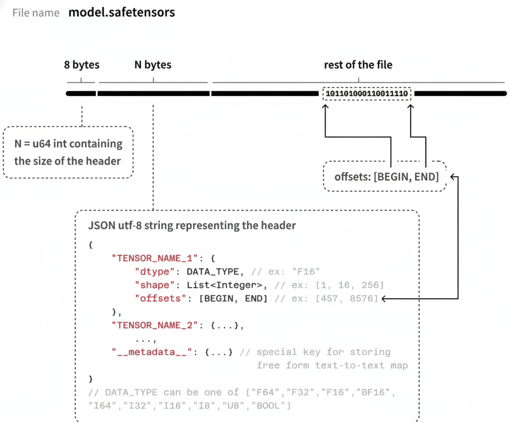
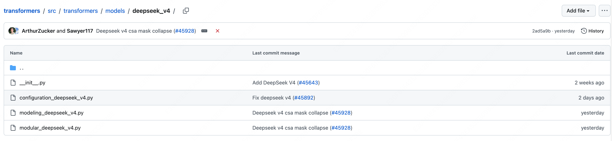
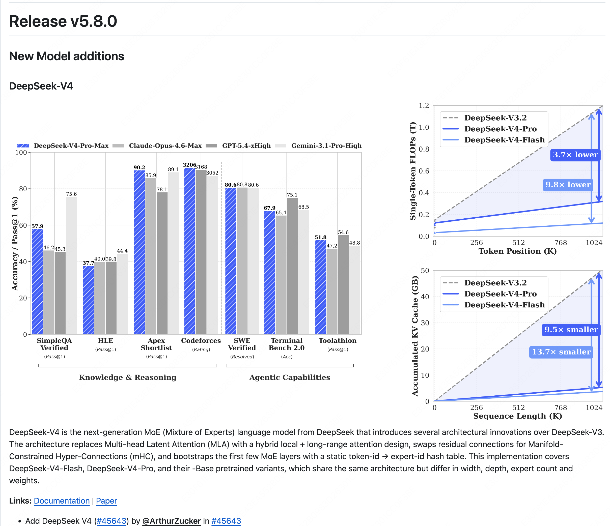

学习资源：
LLM 视频：
李沐 动手学深度学习PyTorch版
Deep Learning
FNN
Feedforward Neural Network，前馈神经网络，也是最简单的神经网络
模型结构如下图所示：

如果我们想要用它作为一个序列转导模型(Sequence Transduction Model)来解决序列转导问题，它是不合适的，原因有以下几点：
-
从输入层来看，它的输入是固定的，每输入一个token，就会直接产生一个结果，显然是不合适的，只能产生所谓的等长结果
-
完全丢弃了句子中词语的顺序信息
RNN
Recurrent Neural Network, 循环神经网络的出现就是为了解决 FNN 中出现的序列转导问题
首先我们来尝试改造之前的 FNN，来将输入句子中词语的信息也编码进模型里，那么很容易想到，我们可以将上一个时间步 $t - 1$ 计算得到的中间输出 $h_{t - 1}$ 也传递给下一个时间步 $t$。那么再下一个时间步 $t$ 计算时，就可以像人一样分析前面出现的词语了
我们来举例说明，如果我们的输入是"我爱水课"，那么计算过程如下：

也就是：
$h_t = f(W x_t + U h_{t - 1})$
$y_t = g(Vh_t)$
其中：
- $x_t$: $t$ 时间步的输入
- $h_t$: $t$ 时间步的隐藏状态
- $y_t$: $t$ 时间步的输出
- $W,U,V$: 权重矩阵
- $h_t$中的 $f$: 激活函数,如 ReLU, Sigmoid, 用于引入非线性
- $y_t$中的 $g$: 视任务而定，用来将输出转换为我们想要的结果
很好，但是现在还有一个问题尚未解决，输入和输出不等长的时候怎么办？
那么我们显然不能在每个时间步 $t$ 都固定进行一次输出，而应该将输入和输出分开来，也就是在所有输入都计算完成后，再统一进行输出。
这就是大名鼎鼎的 Encoder 和 Decoder 架构：

这里的 $C$ 就是所谓的“上下文向量”
现在我们来看 RNN 似乎已经够完美了，但是依旧还有三个问题困扰着人们：
- 我们来看隐藏状态 $h_1$，它在产生 $C$ 的时候已经被计算了好多次了，随着序列长度的增加，它所携带的信息素会被稀释的越来越少，这也就是我们经常说的模型在处理长序列时出现的“遗忘”问题。
- 对于每一个输出来说，不同时间步的隐藏状态 $h_i$ 对它来说意义显然不一样，比如“我爱水课”中的“水”，很明显对于“课”这个词应该非常关注，而不是现在这样笼统的进行同等对待的输入，而是应该类似于 $s_2=0.1h_1+0.1h_2+0.2h_3+0.6h_4$
- Encoder 和 Decoder 中都是串行化计算，无法并行，限制了模型进一步发展
对于上述问题，人们提出了 Attention Mechanism(注意力机制)：

比如对于“我爱水课”中的”水“，它明显对"课"这个字有更高的关注度，因此它的输入中对 $h_4$ 的关注度明显大于 $h_1$，$h_2$，因此我们可以让模型在训练中学习到 $C_2 = 0.1h_1+0.1h_2+0.3h_3+0.5h_4$。
这样对于距离它很远的词，它也可以通过给它一个很大的权重，来解决遗忘问题。
因此上面的问题1 和问题 2 的问题都解决了，现在只剩下一个问题了，那就是如何并行计算？
虽然也有很多人在使用 CNN 来改造 Encoder 来达到并行计算的目的，但是又重新带来了远距离遗忘问题，要想彻底解决这个问题，就得等到 2017 年 Transformer 的横空出世了
谷歌在 2017 年发表了一篇划时代的论文： Attention Is All You Need(论文原文以及翻译在这)
论文中提到了一种全新的模型：Transformer，它完全抛弃了 RNN 或者 CNN 的序列建模方式，完全基础自注意力机制，模型结构如下图所示：

直接看上面的图，肯定会两眼一黑，这画的都是个啥啊？？？
我们来慢慢分析，你就能理解为什么会这样设计了，以及怎么想到这么设计的？
首先我们来看看 RNN 还会有串行化的问题呢？就在于我们在解决 FNN 中句子中词语的位置信息问题时，采用了一种暴力方式，让当前时间步 $t$ 的输出依赖于上一个时间步 $t - 1$ 的隐藏状态 $h_{t - 1}$，而不是只依赖于当前输入 $x_t$。这种方法确实在一定意义上解决了位置信息的问题，但是后来又带来了远距离遗忘问题。
这时候我们会发现，能不能把这个输入的位置信息也硬编码进输入里面呢？这样我们就可以不用依赖上一个时间步的隐藏状态了，而同时计算每一个输入的输出了。恭喜你发明了 PE(Positional Encoding, 位置编码):
$$
\begin{align*}
PE_{(pos,2i)} &= \sin\left(\frac{pos}{10000^{\frac{2i}{d_{model}}}}\right) \\
PE_{(pos,2i+1)} &= \cos\left(\frac{pos}{10000^{\frac{2i}{d_{model}}}}\right)
\end{align*}
$$这种位置编码的好处涉及到傅立叶变换等相关知识，这里先不赘述了。以及中国的苏剑林老师提出了 RoPE（旋转位置编码），优化了 Transformer 论文中原版的位置编码，被 ChatGPT 等现在主流大模型直接采用。
有了上面的位置编码，我们就可以完全抛开之前 RNN 的循环结构了，转为设计一种更加优雅的自注意力机制，我们叫他缩放点积注意力(Scaled Dot-Product Attention)。
我们首先假设我们的输入是 $n$ 个 token 组成的序列 $x_1, x_2, ..., x_n$，每个 token 都会被 embedding 成一个 $d_{model}$ 维的向量，再和位置编码 PE 进行相加，得到最后的输入矩阵是 $X \in \mathbb{R}^{n \times d_{model}}$。模型在训练的时候，实际上就是在训练模型中的权重矩阵 $W_Q, W_K, W_V \in \mathbb{R}^{d_{model} \times d_k}$，这些权重矩阵会将我们的输入 $X$ 映射到 $d_k$ 维的空间中。
输入矩阵 $X \in \mathbb{R}^{n \times d_{model}}$，分别和 $W_Q, W_K, W_V \in \mathbb{R}^{d_{model} \times d_k}$ 相乘得到矩阵 $Q, K, V \in \mathbb{R}^{n \times d_k}$。
其中:
- $Q$：由查询向量 $\overrightarrow {Q_i}$ 组成的查询矩阵。通过使用一个查询投影矩阵 $W_Q$ 乘以嵌入向量 $\overrightarrow {E_i}$ 得到查询向量 $\overrightarrow {Q_i}$。
- $K$：由键向量 $\overrightarrow {K_i}$ 组成的键矩阵。通过使用一个键投影矩阵 $W_K$ 乘以嵌入向量 $\overrightarrow {E_i}$ 得到键向量 $\overrightarrow {K_i}$。
- $V$：由值向量 $\overrightarrow {V_i}$ 组成的值矩阵。通过使用一个值投影矩阵 $W_V$ 乘以嵌入向量 $\overrightarrow {E_i}$ 得到值向量 $\overrightarrow {V_i}$。
要想理解这里的矩阵 $Q, K, V$，我们先来举个例子来形象化的理解它们分别的作用：
假设有一个男生叫小帅，他想找对象，于是打开了交友软件。软件上有许多个女生 $b_1, b_2, b_3, \dots$ 也在寻找对象。小帅希望找出哪些女生最符合自己的要求，这样他就可以把更多注意力放在最合适的人身上。那么他可以这样做：

- 小帅首先需要发布自己的择偶标准，就是 Query($Q$);
- 每个人都需要在主页上标明自己符合哪些条件（包括小帅自己），这就是 Key($K$);
- 每个人还需要写清楚自己所有的的实际信息，这就是 Value($V$);
- 小帅用自己的要求 $Q$ 去和每个女生的 $K$ 做匹配，计算匹配程度（点积，即 $QK^T$），然后乘以缩放因子$\frac{1}{\sqrt{d_k}}$（这里是为了将点积后的结果变得更方便后续计算，实践中我们发现点积缩放后注意力速度更快、更节省空间），再用 Softmax 将匹配度归一化，得到注意力权重，这样就知道应该重点关注哪些女生；
- 注意力权重矩阵 $A' = \text{Softmax}(QK^T)$ 只是表示匹配程度，例如 $0.5, 0.2, 0.1 \dots$。但是仅有权重还不够，最终还需要获取具体信息，所以要用注意力权重去加权 Value ($V$)，得到最终的输出结果。
所以最终的缩放点积注意力机制计算可表示为：
$$
\text{Attention}(Q, K, V) = \text{softmax}\left(\frac{QK^T}{\sqrt{d_k}}\right)V
$$现在我们再来看看上面 Transformer 架构图上的 Encoder 部分：

这里的多头注意力模块是不是和我们上面设计的缩放点积注意力一样，所以图中部分有三个输入，分别对应去计算 $Q, K, V$。
论文中的编码器由 $N = 6$ 个相同的层堆栈组成，每一层有两个子层。第一个是多头自注意力机制，第二个是一个简单、位置感知的全连接前馈网络。在每个子层周围使用残差连接，然后进行层归一化。
Q. 那么多头注意力机制的“多头”到底体现在哪里呢？
A. 我们上面知道我们的输入矩阵 $X \in \mathbb{R}^{n \times d_{model}}$ ，而 $Q, K, V \in \mathbb{R}^{n \times d_k}$，最后的缩放点积注意力机制计算得到的结果 $\text{Attention}(Q, K, V) \in \mathbb{R}^{n \times d_k}$。但是为了方便计算，统一中间每一层的结果维度，我们会让每一层计算得到的结果和输入的维度一致，因此我们还需要将单个缩放点积注意力机制得到的结果进行一些处理，来得到和输入矩阵 $X$ 维度相同的输出结果。
最简单的方式就是使用和 $d_{model}$ 维度相同的矩阵 $W_Q, W_K, W_V$,即 $d_k = d_{model}$,也就是 $W_Q, W_K, W_V \in \mathbb{R}^{d_{model} \times d_{model}}$，这样我们的矩阵 $Q, K, V \in \mathbb{R}^{n \times d_{model}}$，最后计算得到的结果 $\text{Attention}(Q, K, V) \in \mathbb{R}^{n \times d_{model}}$。
但是实践发现，与其使用具有 $d_{model}$ 维的 $K, Q, V$ 的单个注意力函数，不如将它们线性投影 $h$ 次，分别映射到 $d_k, d_k, d_v$ 维，这样效果要好得多。
也就是 $Q, K \in \mathbb{R}^{n \times d_k}，V \in \mathbb{R}^{n \times d_v}$，最后计算得到的结果 $\text{Attention}(Q, K, V) \in \mathbb{R}^{n \times d_{v}}$，最后我们再将这 $h$ 个 $\mathbb{R}^{n \times d_{v}}$ 首尾相连直接拼接 (concatenate) ，得到一个 $d_{model}$ 维,最后再通过一个线性层让不同 head 的信息可以交互融合，这样结果又变回了我们想要的 $\mathbb{R}^{n \times d_{model}}$。
多头注意力块展开也就是长成这样：

这里使用多个注意力头也很好理解，因为可以让每个注意力头，注意到不同的部分。还拿之前的例子来举例，一部分注意力头会更关注女生外表信息，比如身高，体重，气质等，另一个注意力头更关注女生的性格。这样在大数据训练下，模型的每一个注意力头可以更加专业，更加聚焦。
下面我们再来看看 Decoder 部分：

Decoder 部分和 RNN 很像，也是一种自回归生成 → 上一步输出的 token 作为下一步输入
-
推理阶段（生成）
-
我们要生成一句话：$y_1, y_2, …, y_n$
-
第一步输入：通常是一个 <BOS> token（句子开始符）
-
每一步生成的 $y_t$ → 作为下一步 Decoder 生成 $y_{t+1}$ 的输入
-
这里依旧是一个串行化计算，这个也符合人类，说话时一个字一个字的说
-
训练阶段
-
已知目标序列 $Y = [y_1, …, y_n]$ (也就是我们的训练数据)
-
Encoder输入：源语言序列 $X$（如英文）
-
Decoder输入：目标语言序列 $Y$ 左移一位（例如中文，左移一位 + <BOS>）
-
目标输出：目标语言序列 $Y$
-
假设训练文本是一个句子：$X =$ “我爱水课”, 那么 Encoder 中就是 “我爱水课”，Decoder 中就是 “<BOS>I love easy”，预期输出就是"I love easy courses"
这里的左移一位是为了让模型学习预测“下一个 token”
Masked Attention 保证每个位置只能看到自己和前面的 token，而不能偷看后面的答案(token)。本质上就是将之前计算得到的 $QK^T$ 矩阵加上一个下三角掩码矩阵（矩阵上三角注意力设置为负无穷大，其余都是0，这样那部分经过 Softmax 后就变成 0），该位置不会关注未来 token 的 Value
至于为什么 Decoder 需要 Masked Attention，而 Encoder 中不需要呢？这就在于两部分的分工是不一样的。
- Encoder 的任务是理解整个输入序列
- 每个 token 都可以参考序列中的所有 token，包括后面的 token
- 因此 Encoder 可以使用 完整的自注意力，不需要 Mask
- Decoder 的任务是自回归生成目标序列
- 预测下一个 token
- 只能依赖已生成的 token → 需要 Mask 保证未来信息不泄露
最后六层堆叠起来的样子是这样的：

现在我们再来回头看看 Transformer 架构是如何解决串行化问题的？
把 RNN 的串行递推彻底去掉，改用矩阵乘法一次性计算所有位置的注意力，这正是 $QK^T$ 矩阵乘法的意义。而不是每一个 token 并行计算，通过矩阵乘法就能自然的进行矩阵分块来实现并行计算。
后续架构演进：
1
2
3
4
5
6
7
8
9
10
11
12
13
14
15
16
17
18
19
20
21
22
23
24
25
26
27
28
29
30
31
32
33
34
35
36
37
38
39
40
41
42
43
44
45
46
47
48
49
50
51
52
53
54
55
56
57
58
59
60
61
62
|
原始 Transformer (2017)
│
├── 去掉 Encoder → GPT (Decoder-Only)
│ ├── 引导:翻译有两个序列(英→中,需对齐),但"续写"呢?"今天天气" → "很好" → "适合"
│ ├── 你的洞察:只有一个序列在不断往右延伸;输入即是输出序列的前缀,没有"原文/译文"边界
│ └── 结论:
│ ├── 完整 Decoder 每层有 3 个子层:Masked Self-Attn / Cross-Attn / FFN
│ ├── GPT 去掉 Cross-Attention(没有 Encoder,没东西可 cross)
│ └── 配套机制:Causal Mask 用 上三角 -∞ 矩阵(softmax 前相加),强制"不准看右边"
│
├── 位置编码 → RoPE (旋转相对位置)
│ ├── 引导:训练时最大长度 2048,推理时输入 3000 个 token 会怎样?位置 3000 从没见过。
│ │ 注意力关心的核心是"这个词在位置 7",还是"这两个词距离为 3"?
│ ├── 降难度引导:二维向量里,什么变换能让内积只取决于角度差?
│ │ a(θ₁)·b(θ₂)=|a||b|cos(θ₁−θ₂),若令 θ = 位置×常数呢?
│ ├── 你的洞察:不应该改变向量大小,而是对每个 token 向量做一个角度的旋转变换
│ └── 结论:
│ ├── 位置 i 转 i×α、j 转 j×α → 内积角度差 (i−j)α 自动编码相对距离
│ ├── 旋转的是投影后的 Q、K(做内积前),V 不旋转
│ ├── 512 维两两配对成 256 个 2D 平面,各用不同频率旋转
│ ├── 频率指数递减 αₖ = 1/10000^(2k/d)(高频区分近距离,低频区分远距离,类比秒针/时针)
│ ├── 不改模长:角度决定"我和谁相关",大小只由内容决定 → 关注点分离
│ └── 天然支持外推:位置 5000 只是多转,无需训练时见过
│
├── MHA → GQA (共享KV, 省显存)
│ ├── 引导:算 32层×32head×128维×4096长度×2(K,V) 的 KV Cache 有多大?
│ │ Q 决定"我在找什么"需多样,K/V 真的需要每个 head 都不同吗?
│ ├── 你的反应:约 1B 值(fp16 ~2GB/单用户);担心共享 KV 会掉效果
│ ├── 引导追问:MHA(32组,1x)↔ 极端共享(1组),能想个折中吗?
│ ├── 你的决策:"1/64?那就 8 组吧,折中一下"
│ └── 结论:你独立发明了 GQA
│ ├── MHA: 32Q/32KV → 效果最好,Cache 最大
│ ├── GQA: 32Q/8KV → 每4个Q共享1组KV,Cache 缩到 1/4,效果几乎无损(LLaMA2/3、Mistral)
│ └── MQA: 32Q/1KV → Cache 最小(1/32),效果有损
│
├── ReLU → SwiGLU (门控激活)
│ ├── 引导:ReLU 负值全变 0(信息丢失)。SwiGLU=(Swish(xW₁))⊙(xW₃)·W₂,
│ │ 多出的逐元素乘 ⊙ 起什么作用?把一个分支看作"开关/阀门"...(LSTM 里见过)
│ ├── 你的回答:门控吗?用分支 A 来控制最后输出
│ └── 结论:
│ ├── 分支 A(Swish)≈0 关闭该维度,≈1 放行
│ ├── 优于 ReLU:可 0.3/0.7 细粒度调节每个维度的信息流量(非全开/全关)
│ └── W₁(放什么过去)与 W₃(放多少过去)是两组独立参数,分别学习
│
├── LayerNorm → RMSNorm (更简单)
│ ├── 引导:LayerNorm=(x−μ)/σ·γ+β 要算两个统计量(μ 和 σ)。
│ │ 若实验发现"减均值"对效果贡献很小,你会怎么简化?
│ ├── 你的回答:直接不减均值吗?也不会这么简单粗暴吧
│ └── 结论:就是这么简单粗暴 → RMSNorm = x / √(mean(xᵢ²)) · γ
│ ├── 去掉减均值、去掉 +β,只用均方根归一化
│ ├── 实验证明减均值几乎无影响,但省了算均值/减法/参数 β
│ └── 每层每个子层都做 Norm,大模型累积可观(LLaMA、GPT-4 全用)
│
└── Dense FFN → MoE (8专家选2, 大参数小计算)
├── 引导:想要参数量巨大但推理成本不爆炸?FFN 设 8 个副本(专家),每 token 只激活 2 个。
│ 这对"知识容量"和"计算量"分别意味什么?
├── 你的推导:Router 其实就是更小的 线性层+softmax;进而担心"不平均,又降级回去了"
└── 结论:
├── 大参数(知识容量↑)+ 小计算(每 token 只算 2/8 专家)
├── 你预判到 专家坍塌(Expert Collapse):token 涌向少数专家,其余"饿死"
└── 解法:loss 加负载均衡惩罚项 L_total = L_LM + α·L_balance
(α 太大→模型不敢有偏好;太小→又回到坍塌)
|
思考题：
Q1： 如果序列长度从 4096 翻倍到 8192，Self-Attention 的计算量变为原来的几倍？为什么？
Q2： KV Cache 在 MoE 模型中会变大还是变小？为什么？
Q3： 如果去掉残差连接但保留所有其他组件，模型会出什么问题？给出两个层面的解释（训练层面 + 语义层面）。
A1:
我们假设输入为 $n$，隐藏层维度为 $d$，注意力头为 $32$，GQA 中的 group 为 8。
首先我们知道，对于矩阵运算 $\mathbb{R}^{a \times b} \times \mathbb{R}^{b \times c} = \mathbb{R}^{a \times c}$ 的计算量为 $abc$（因为对于结果矩阵 $\mathbb{R}^{a \times c}$，每一个元素都需要计算 $b$ 次 $\text{MAC}$ 操作）
首先我们计算投影权重：
-
$Q = X · W_Q$，总计算量为 $nd^2$
-
$K = X · W_K$，总计算量为 $\frac{nd^2}{4}$
-
$V = X · W_V$，总计算量为 $\frac{nd^2}{4}$
所以我们计算所有注意力头的投影权重 $Q、K、V$ 矩阵的总计算量为 $\frac{3}{2}nd^2$
对于注意力机制计算 $\text{Attention}(Q, K, V) = \text{softmax}\left(\frac{QK^T}{\sqrt{d_k}}\right)V$：
每一个注意力头都有：
- $QK^T$ 计算量为 $n^2 · \frac{d}{32}$
- $\frac{QK^T}{\sqrt{d_k}}$ 计算量为 $n^2$
- $\text{softmax}\left(\frac{QK^T}{\sqrt{d_k}}\right)$ 计算量为 $n^2$
- $\text{softmax}\left(\frac{QK^T}{\sqrt{d_k}}\right)V$ 计算量为 $n^2 · \frac{d}{32}$
上述过程加起来可得 32 个注意力头总计算量为 $n^2(2d + 64)$
最后还有一个 output 的线性层计算： $nd^2$
所以整个 Self-Attention 的计算量可以把上面的结果加起来也就是 $n^2(2d + 64)+\frac{5}{2}nd^2$。
这是一个关于 $n$ 的多项式，有 $n 、 n^2$，我们把 $n$ 当成自变量就可以看作是:
$$
\text{Cost} \approx O(n^2 \cdot d) + O(n \cdot d^2)
$$
可以简单认为如果序列长度从 4096 翻倍到 8192，Self-Attention 的计算量变为原来的 $4$ 倍。
A2：
MOE 模型我的理解是对 FNN 层有变化，对 Attention 层没有影响，因此是不变的
A3:
我认为在训练层面看来会出现梯度爆炸或者梯度消失的问题，对于模型层数的增加。因为随着层的增加。
而对于语义层面，我们得到的注意力计算结果可以理解为加上了前面的 token 信息的糅合的结果，对本身的 token 信息会稀释，所以需要再做一次加上来加深。
补充一点：没有残差时，经过 12 层注意力"混合"，所有 token 的表示会趋向相同（信息被反复平均化）。残差保证每个 token 始终保有自己的"底色"。
长上下文总结：
- 问题1: O(n²) 计算量太大
- 滑动窗口注意力 (大部分层局部，少数层全局)
- FlashAttention (不降计算量，优化内存搬运)
- 问题2: 位置外推 (RoPE 没见过超长位置)
- Position Interpolation (统一压缩，简单但损失近距离分辨率)
- NTK-aware / YaRN (高频不动，低频缩放，保持近距离精度)
RoPE
Transformer 原版论文中使用的是绝对位置编码，它的问题是对于序列更长的时候，模型无法很好的外推，以及对模型来说似乎两个词之间的距离比位置本身的意义更大，因此旋转位置编码应运而生：RoFormer: Enhanced Transformer with Rotary Position Embedding
我们从直觉开始讲起，方便理解
从矩阵视角来说，注意力机制公式是：
$$
\text{Attention}(Q, K, V) = \text{softmax}\left(\frac{QK^T}{\sqrt{d_k}}\right)V
$$
我们把视角拉小点，拉到向量视角，对于 $\text{token}_i$ 来说，它有自己的 $\vec{q_i},\vec{k_i},\vec{v_i}$ 行向量，如果我们要算另一个 $token_j$ 对他的影响，也就是计算两个 token 之间的 $\langle \vec{q_i}, \vec{k_j} \rangle$ 的内积：
$$
\langle q_i, k_j \rangle = q_i k_j^T
$$
直接这样算内积没有引入 PE（位置编码），也就是无法建立对两个 token 之间位置距离 $j-i$ 的感知。同时我们只需要对 $q$ 和 $k$ 向量引入位置编码即可。
为便于讨论，我们假设 $q$ 和 $k$ 为二维行向量。
也就是我们想引入一个映射 $f$，让 $q_i^{RoPE} = f(q_i)，k_i^{RoPE} = f(k_i)$
首先我们先回忆一下一种神奇的矩阵，旋转矩阵 $R(\theta)$：
$$
R(\theta) = \begin{bmatrix} \cos \theta & -\sin \theta \\ \sin \theta & \cos \theta \end{bmatrix}
$$
对于任意的二维行向量 $\vec{v}$ 来说，变换 $\vec{v}' = \vec{v} \cdot R(\theta)$ 等价于将向量 $\vec{v}$ 逆时针旋转 $\theta$ 度
旋转矩阵 $R(\theta)$ 还有一些特殊的性质：
$$
R(\theta)^T = R(-\theta) \\
R(\theta_1)R(\theta_2) = R(\theta_1 + \theta_2)
$$
因此：
$$
\begin{align*}
\langle q_i', k_j' \rangle
&= \langle q_i R(i\theta),\; k_j R(j\theta) \rangle \\
&= q_i R(i\theta) R(j\theta)^T k_j^T \\
&= q_i R(i\theta) R(-j\theta) k_j^T \\
&= q_i R((i-j)\theta) k_j^T
\end{align*}
$$
我们想要的 $j-i$ 的形式这不就来了吗！
现在我们需要将 $q$ 和 $k$ 扩展到 $n$ 维行向量
为了将我们在二维中的结果推广到任意 $x_i \in \mathbb{R}^d$，其中 $d$ 是偶数，我们将 $d$ 维空间划分为 $d/2$ 个子空间，并利用内积的线性特性将它们组合起来，将 $f_{\{q,k\}}$ 转换为：
$$
f_{\{q,k\}}(x_m, m) = x_m \, W_{\{q,k\}} \, R_{\Theta,m}^d
$$
其中旋转矩阵 $R_{\Theta,m}^d$ 是一个 $d \times d$ 的分块对角矩阵：
$$
R_{\Theta,m}^d =
\begin{pmatrix}
\cos m\theta_1 & -\sin m\theta_1 & 0 & 0 & \cdots & 0 & 0 \\
\sin m\theta_1 & \cos m\theta_1 & 0 & 0 & \cdots & 0 & 0 \\
0 & 0 & \cos m\theta_2 & -\sin m\theta_2 & \cdots & 0 & 0 \\
0 & 0 & \sin m\theta_2 & \cos m\theta_2 & \cdots & 0 & 0 \\
\vdots & \vdots & \vdots & \vdots & \ddots & \vdots & \vdots \\
0 & 0 & 0 & 0 & \cdots & \cos m\theta_{d/2} & -\sin m\theta_{d/2} \\
0 & 0 & 0 & 0 & \cdots & \sin m\theta_{d/2} & \cos m\theta_{d/2}
\end{pmatrix}
$$
等价地，也可以用分块矩阵简洁表示为：
$$
R_{\Theta,m}^d =
\begin{pmatrix}
R_{m\theta_1} & 0 & \cdots & 0 \\
0 & R_{m\theta_2} & \cdots & 0 \\
\vdots & \vdots & \ddots & \vdots \\
0 & 0 & \cdots & R_{m\theta_{d/2}}
\end{pmatrix}, \quad
\text{其中 } R_{m\theta_i} =
\begin{pmatrix}
\cos m\theta_i & -\sin m\theta_i \\
\sin m\theta_i & \cos m\theta_i
\end{pmatrix}
$$
旋转矩阵的预定义参数为：
$$
\Theta = \left\{ \theta_i = 10000^{\frac{-2(i-1)}{d}} \,\middle|\, i = 1, 2, \ldots, \frac{d}{2} \right\}
$$
将 RoPE 应用于我们的自注意力，我们得到：
$$
\langle q_m, k_n \rangle = q_m k_n^T = (x_m W_{q} R_{\Theta,m}^d) (x_n W_{k} R_{\Theta,n}^d)^T = x_m W_{q} R_{\Theta,m - n}^d W_{k} x_{n}^T
$$
需要注意的是，这里的 $R_{\Theta}^d$ 是一个正交矩阵，这确保了在进行位置编码过程中的稳定性。
为什么这里的 $R_{\Theta}^d$ 是一个正交矩阵，确保了在进行位置编码过程中的稳定性？
正交矩阵 $R$ 满足 $R^T R = R R^T = I$（即转置等于逆矩阵）。
由此带来的核心性质是：它乘以任何向量，都不会改变向量的长度（范数）。
用公式表示就是：
$$\| R x \|_2 = \| x \|_2$$因此这里的 RoPE 位置编码实际上是对 $q$ 和 $k$ 向量做了一个旋转 $( q_i R(\alpha))$，这本质上是保距变换。
在 Transformer 的注意力机制中，我们计算的是内积 $\langle q_i', k_j' \rangle$。如果不做旋转（或旋转矩阵不正交），向量在经过多次变换后范数可能会爆炸或消失（指数级增长或衰减），这会导致：
| 问题 |
后果 |
| 范数爆炸 |
内积变得极大，Softmax 输出趋近于 one-hot，梯度趋近于 0，模型无法训练 |
| 范数消失 |
内积趋近于 0，所有 token 的注意力权重均等，模型失去区分能力 |
而因为 $R_{\Theta}^d$ 是正交矩阵，旋转后的 $q_i'$ 和 $k_j'$ 的范数跟旋转前完全一致：
$$\| q_i' \| = \| q_i R \| = \| q_i \|, \quad \| k_j' \| = \| k_j R \| = \| k_j \|$$所以内积的数值范围被严格控制住了：
$$|\langle q_i', k_j' \rangle| \le \| q_i' \| \cdot \| k_j' \| = \| q_i \| \cdot \| k_j \|$$也就是说，位置编码（旋转）只是改变了方向，没有改变大小。这就不会引入额外的数值不稳定性，训练时梯度也更平滑。
此外由于 $R_{\Theta}^d$ 的稀疏性，直接按照上述注意力公式的矩阵乘法进行 $R_{\Theta}^d$ 和 $x \in \mathbb{R}^d$ 的乘积运算效率太低，因此我们需要用一种更高效的计算方式：
$$
R_{\Theta,m}^d x =
\begin{pmatrix}
x_1 \\ x_2 \\ x_3 \\ x_4 \\ \vdots \\ x_{d-1} \\ x_d
\end{pmatrix}
\odot
\begin{pmatrix}
\cos m\theta_1 \\
\cos m\theta_1 \\
\cos m\theta_2 \\
\cos m\theta_2 \\
\vdots \\
\cos m\theta_{d/2} \\
\cos m\theta_{d/2}
\end{pmatrix}
+
\begin{pmatrix}
-x_2 \\
x_1 \\
-x_4 \\
x_3 \\
\vdots \\
-x_d \\
x_{d-1}
\end{pmatrix}
\odot
\begin{pmatrix}
\sin m\theta_1 \\
\sin m\theta_1 \\
\sin m\theta_2 \\
\sin m\theta_2 \\
\vdots \\
\sin m\theta_{d/2} \\
\sin m\theta_{d/2}
\end{pmatrix}
$$此时便可将原先矩阵乘法的 $O(d^2)$ 的时间复杂度降低到逐元素相乘的 $O(d)$。
证明很简单，我们取第 $i$ 块的旋转矩阵 $R_{m\theta_i}$：
$$
R_{m\theta_i} =
\begin{pmatrix}
\cos m\theta_i & -\sin m\theta_i \\
\sin m\theta_i & \cos m\theta_i
\end{pmatrix}
$$
我们需要计算:
$$
\begin{align*}
R_{m\theta_i} \begin{pmatrix} x_{2i-1} \\ x_{2i} \end{pmatrix}
&= \begin{pmatrix}
\cos m\theta_i & -\sin m\theta_i \\
\sin m\theta_i & \cos m\theta_i
\end{pmatrix}
\begin{pmatrix} x_{2i-1} \\ x_{2i} \end{pmatrix} \\[8pt]
&= \begin{pmatrix}
x_{2i-1} \cos m\theta_i - x_{2i} \sin m\theta_i \\
x_{2i-1}\sin m\theta_i + x_{2i}\cos m\theta_i
\end{pmatrix} \\[8pt]
&= \begin{pmatrix} x_{2i-1} \\ x_{2i} \end{pmatrix}
\odot
\begin{pmatrix} \cos m\theta_i \\ \cos m\theta_i \end{pmatrix}
+
\begin{pmatrix} -x_{2i} \\ x_{2i-1} \end{pmatrix}
\odot
\begin{pmatrix} \sin m\theta_i \\ \sin m\theta_i \end{pmatrix}
\end{align*}
$$以及在当前主流 GPT 的实现中，对于这里的 $R_{\Theta}^d$ 实际上有两种常见的实现约定：
- 交错式（interleaved） —— 即原始 RoPE 论文中的方式
配对方式为：$(x_0, x_1), (x_2, x_3), (x_4, x_5), \dots$，也就是相邻两个维度组成一个子空间进行旋转。
- 半分式（rotate_half） —— 即 Hugging Face 和 GPT-J 等实现中采用的方式
配对方式为：$(x_0, x_{d/2}), (x_1, x_{d/2+1}), \dots$，即前一半维度和后一半维度对应位置配对。这也是现在主流的开源模型如 Qwen3 中所采用的实现方式。
这种方式的好处在于方便 GPU 的拆分和计算。
需要注意的是：具体用哪种,必须和在训练阶段的使用方式一致。
Torch
神经网络中最常用的框架就是 PyTorch，因此我们这里就介绍一些 Torch 的语法
Tensor
广播
从最后一维开始对齐，大小为 1 的维度可以自动扩展到任意大小。
规则很简单：
- 将两个 shape 右对齐，缺失的维度自动补 1，然后逐位比较：
| 情况 |
结果 |
| 两维大小相同 |
直接运算 |
| 其中一个为 1 |
扩展到另一个的大小 |
| 都不为 1 且不相等 |
报错 ❌ |
1
2
3
|
[3, 1] 和 [3, 4096] → 广播成 [3, 4096] ✅
[3] 和 [3, 4096] → 等价于 [1, 3] 和 [3, 4096]，维度不对齐 ❌
[1] 和 [3, 4096] → 等价于 [1, 1] 和 [3, 4096],广播成 [3, 4096] ✅
|
标量会被自动"扩展复制"到与张量相同的形状，再进行逐元素运算。
为什么是从右边对齐？
对齐时从右侧开始匹配维度，而非左侧。这是因为最右边对应最低维——最后几维通常表示"数据内容"（如 hidden_size），倒数第二维通常表示"样本数量"（如 num_tokens）。
从右对齐，使得"同一组权重作用于所有样本"这类最常见的操作能够自然、正确地运行。
附录
怎么读论文
来自李沐视频 如何读论文【论文精读·1】
论文的基本结构
绝大多数学术论文都遵循以下"八股文"式的标准结构：
- 标题与作者（Title）：概括论文的核心主题，作者信息则标明研究来源与归属
- 摘要（Abstract）：全文的高度浓缩，简要介绍研究背景、方法与主要结论，帮助读者快速判断是否值得阅读
- 引言（Introduction）：阐述研究背景与动机，说明当前领域存在的问题，以及本文的研究目标与贡献
- 方法（Method）：详细介绍作者提出的新方法或新算法，是论文的核心内容
- 实验（Experiment）：通过对比实验验证所提方法的有效性与优越性，以数据说话
- 结论（Conclusion）：内容通常与摘要相近，但由于此时已经历了方法与实验两个阶段，可以用具体数据和结论加以支撑，更具说服力
为什么不能从头读到尾？
学术论文数量庞大，若每篇都逐字逐句地从头读到尾，时间成本极高，且真正适合自己的论文往往只占少数。因此，我们需要一套高效的阅读策略，快速筛选出值得精读的文章。
三遍读论文法
下面介绍一种经典方法：用三遍阅读完成一篇论文。
| 章节 |
Pass 1 |
Pass 2 |
Pass 3 |
| Title |
① |
① |
① |
| Abs |
② |
② |
② |
| Intro |
|
③ |
③ |
| Method |
④ 粗略浏览图表 |
④ |
④ |
| Exp |
⑤ 粗略浏览图表 |
⑤ |
⑤ |
| Conclusion |
③ |
⑥ |
⑥ |
🔍 第一遍：海选（花时最少）
目标： 用最短的时间判断这篇论文是否值得继续阅读。
阅读顺序： 标题 → 摘要 → 结论，同时粗略扫一眼方法和实验中的图表。
读完这三个部分后，你应该能初步回答以下问题：
- 这篇论文在讲什么？
- 所提方法看起来怎么样？
- 是否符合自己的研究方向，值得深入阅读？
如果答案是肯定的，则进入第二遍。
📖 第二遍：精选（完整通读）
目标： 完整过一遍全文，对论文各部分形成整体认知，但不必深究所有细节（如复杂公式的推导）。
重点关注：
- 读懂关键图表： 每张图、每个表格究竟在说明什么？作者提出的方法与其他方法是如何对比的？差距有多大？
- 梳理引用文献： 作者是在哪些前人工作的基础上进行改进的？做了哪些改进？若发现重要的引用文献尚未读过，将其圈出，列入"待读清单"。
- 标记疑难之处： 暂时没看懂的地方不必强求，标记下来留待第三遍解决。
读完后思考：
这篇论文的质量如何？与自己研究方向的契合程度怎样？由此决定是否进行第三遍的深度精读。
🧠 第三遍：精读（逐字逐句，深度理解）
目标： 彻底吃透论文，做到"如同自己写了这篇文章"。
阅读方式： 逐字逐句，明白每一句话、每一段落的含义，同时主动思考以下问题：
- 如果是我来写这篇论文，我会如何组织结构？
- 作者是如何设计和描述实验的？如果换我来做，能否做得更好？
建议： 在脑海中还原论文的完整流程，仿佛自己正在亲身做实验、撰写论文。若理解有困难，可借助思维导图或流程图将整体逻辑可视化，辅助理解。
模型文件格式
本节我们来了解两个问题：
- HuggingFace 上开源的大模型是如何被实际使用的？
- 一个完整的模型仓库由哪些文件组成？
HuggingFace 可以理解为 LLM 界的 GitHub，是目前全球最大的开源模型社区，托管着数以百万计的模型：

下面以 2026 年 4 月开源的 DeepSeek-V4-Pro 为例，介绍模型仓库的典型文件结构。
仓库文件组成
一个标准的模型仓库通常包含以下几类文件：
|
文件 |
| 存储模型的神经网络权重（各层参数矩阵） |
model-*.safetensors
model.safetensors.index.json |
| 定义并解释模型结构（隐藏层维度、层数、注意力头等参数） |
config.json
configuration_xxx.py |
| 定义模型的计算逻辑与结构实现（Attention、MLP、Residual 等） |
modeling_xxx.py |
| 控制文本生成策略（如温度、top_p、最大长度等） |
generation_config.json |
| 把文字转成 token ID（词汇表与分词规则） |
tokenizer.json
tokenizer_config.json
assets/chat_template.jinja |
现代大模型本质上仍是神经网络，可以拆分为结构和权重两个部分，仓库中的文件也围绕这两部分展开。
完整的目录结构如下：
1
2
3
4
5
6
7
8
9
10
11
12
13
14
15
16
17
18
19
20
21
22
23
24
25
26
27
28
29
30
|
DeepSeek-V4-Pro/ (865 GB)
├── assets/ # 静态资源
│ └── dsv4_performance.png # 性能对比图（用于 README 展示）
├── encoding/ # 自定义分词器实现
│ ├── tests/ # 分词器单元测试
│ ├── README.md 8.12 kB # 分词器使用说明
│ ├── encoding_dsv4.py 27.9 kB # 核心分词逻辑（BPE/词表编解码）
│ └── test_encoding_dsv4.py # 分词器测试用例
├── inference/ # DeepSeek 官方自己写的推理代码
│ ├── README.md 951 B # 推理使用说明
│ ├── config.json 1.07 kB # 推理专用配置（并行策略、显存优化等）
│ ├── convert.py 7.08 kB # 权重格式转换工具
│ ├── generate.py 6.3 kB # 推理生成逻辑（采样策略、KV Cache 管理）
│ ├── kernel.py 22.2 kB # 底层算子（手写 Triton/CUDA kernel，MoE/MLA 专项优化）
│ ├── model.py 38.6 kB # 模型结构实现（不依赖 transformers，手写 Attention/MoE）
│ └── requirements.txt 92 B # 依赖库列表
├── .gitattributes 1.67 kB # Git LFS 大文件追踪配置
├── DeepSeek_V4.pdf 4.48 MB # 技术报告论文
├── LICENSE 1.08 kB # MIT 开源协议
├── README.md 13.2 kB # 项目说明文档
├── config.json 1.83 kB # 模型结构配置（层数、维度、专家数等）
├── generation_config.json 170 B # 生成参数默认值（temperature、top_p 等）
├── model-00001-of-00064.safetensors 1.85 GB # 模型权重分片 01（embedding 层，较小）
├── model-00002-of-00064.safetensors 13.9 GB # 模型权重分片 02
│ ... (省略中间分片)
├── model-00063-of-00064.safetensors 1.85 GB # 模型权重分片 63（较小）
├── model-00064-of-00064.safetensors 14.0 GB # 模型权重分片 64（含 lm_head）
├── model.safetensors.index.json 11.3 MB # 权重索引（记录每个参数在哪个分片的哪个位置）
├── tokenizer.json 6.37 MB # 词表 + 分词规则（BPE merge 规则等）
└── tokenizer_config.json 801 B # 分词器配置（特殊 token、chat template 等）
|
权重文件
模型权重被切分为 64 个 .safetensors 文件，切分方式为按参数顺序线性切割，基本等价于按层切。
那么推理框架如何知道某个权重具体在哪个文件中？这就由 model.safetensors.index.json 负责，它是一个索引文件，记录了每个参数名与对应权重文件的映射关系：
1
2
3
4
5
6
7
8
9
10
11
12
13
14
15
16
17
18
19
20
21
22
23
24
25
26
27
28
29
30
31
32
33
34
35
36
37
38
39
40
41
42
43
44
45
46
47
48
49
|
{
"metadata": {
"total_size": 864704792696
},
"weight_map": {
"embed.weight": "model-00001-of-00064.safetensors",
"layers.0.hc_attn_base": "model-00002-of-00064.safetensors",
"layers.0.hc_ffn_base": "model-00002-of-00064.safetensors",
"layers.0.hc_attn_fn": "model-00002-of-00064.safetensors",
"layers.0.hc_attn_scale": "model-00002-of-00064.safetensors",
"layers.0.hc_ffn_fn": "model-00002-of-00064.safetensors",
"layers.0.hc_ffn_scale": "model-00002-of-00064.safetensors",
"layers.0.attn.attn_sink": "model-00002-of-00064.safetensors",
"layers.0.attn.wq_a.weight": "model-00002-of-00064.safetensors",
"layers.0.attn.wq_a.scale": "model-00002-of-00064.safetensors",
"layers.0.attn.wq_b.weight": "model-00002-of-00064.safetensors",
"layers.0.attn.wq_b.scale": "model-00002-of-00064.safetensors",
"layers.0.attn.q_norm.weight": "model-00002-of-00064.safetensors",
"layers.0.attn.wo_a.weight": "model-00002-of-00064.safetensors",
...
...
...
"layers.0.ffn.gate.tid2eid": "model-00002-of-00064.safetensors",
"layers.0.ffn.gate.weight": "model-00002-of-00064.safetensors",
"layers.1.hc_attn_base": "model-00003-of-00064.safetensors",
"layers.1.hc_ffn_base": "model-00003-of-00064.safetensors",
"layers.1.hc_attn_fn": "model-00003-of-00064.safetensors",
"layers.1.hc_attn_scale": "model-00003-of-00064.safetensors",
"layers.1.hc_ffn_fn": "model-00003-of-00064.safetensors",
...
...
...
"layers.1.ffn.gate.tid2eid": "model-00003-of-00064.safetensors",
"layers.1.ffn.gate.weight": "model-00003-of-00064.safetensors",
"layers.2.hc_attn_base": "model-00004-of-00064.safetensors",
"layers.2.hc_ffn_base": "model-00004-of-00064.safetensors",
"layers.2.hc_attn_fn": "model-00004-of-00064.safetensors",
"layers.2.hc_attn_scale": "model-00004-of-00064.safetensors",
...
...
...
"mtp.0.e_proj.scale": "model-00064-of-00064.safetensors",
"mtp.0.h_proj.weight": "model-00064-of-00064.safetensors",
"mtp.0.h_proj.scale": "model-00064-of-00064.safetensors",
"mtp.0.enorm.weight": "model-00064-of-00064.safetensors",
"mtp.0.hnorm.weight": "model-00064-of-00064.safetensors",
"mtp.0.norm.weight": "model-00064-of-00064.safetensors"
}
}
|
定位到具体文件后，还需要知道权重在文件内的位置。safetensors 格式在文件头部内置了一个 JSON 索引，记录每个参数的精度、形状和字节偏移量，因此可以直接 seek 到对应位置读取，无需加载整个文件：

- 前面的 8 bytes是一个无符号的整数，表示 header 占的字节数。
- 中间的 N bytes是一个 UTF-8 编码 JSON 字符串，存储 header 的内容，里面为模型权重的元数据信息。
- 文件的剩余部分存储模型权重 tensor 的值。
由于知道了每个权重的精确偏移量，推理框架可以通过 mmap 进行内存映射，实现近乎零拷贝的加载。
我们来尝试使用脚本读取 model-00001-of-00064.safetensors 模型文件试试：
1
2
3
4
5
6
7
8
9
10
11
12
13
14
15
16
17
18
19
20
21
22
23
24
25
26
27
28
29
30
31
32
33
34
35
36
37
38
39
40
41
42
43
44
45
46
47
48
49
50
51
52
53
54
55
56
57
58
59
60
61
62
63
64
65
66
67
68
69
70
71
72
73
74
75
76
77
78
79
80
81
82
83
84
85
86
87
88
89
90
91
92
93
94
95
96
97
98
99
100
101
102
103
104
105
106
107
108
109
110
111
112
113
114
115
116
117
|
#!/usr/bin/env python3
"""
用法：
python3 parse_safetensors.py /path/to/model.safetensors
python3 parse_safetensors.py /path/to/model.safetensors --n 5
python3 parse_safetensors.py /path/to/model.safetensors --header-only
"""
import struct
import json
import argparse
import numpy as np
from pathlib import Path
DTYPE_MAP = {
"F64": (np.float64, 8),
"F32": (np.float32, 4),
"F16": (np.float16, 2),
"BF16": (np.uint16, 2),
"I64": (np.int64, 8),
"I32": (np.int32, 4),
"I16": (np.int16, 2),
"I8": (np.int8, 1),
"U8": (np.uint8, 1),
"BOOL": (np.bool_, 1),
"F8_E4M3": (np.uint8, 1),
"F8_E5M2": (np.uint8, 1),
"F4": (np.uint8, 1),
}
def format_bytes(n):
for unit in ["B", "KB", "MB", "GB", "TB"]:
if n < 1024:
return f"{n:.1f} {unit}"
n /= 1024
parser = argparse.ArgumentParser()
parser.add_argument("path", type=str, help="safetensors 文件路径")
parser.add_argument("--n", type=int, default=3, help="展示前 N 个 tensor 的数值（默认 3）")
parser.add_argument("--header-only", action="store_true", help="只打印原始 header JSON，不读数值")
args = parser.parse_args()
path = Path(args.path)
assert path.exists(), f"文件不存在: {path}"
with open(path, "rb") as f:
# ── 8 字节 header 长度 ──────────────────────────────────────
raw_8 = f.read(8)
header_length = struct.unpack("<Q", raw_8)[0]
print(f"开头 8 字节: { ' '.join(f'{b:02X}' for b in raw_8) }")
print(f"→ header 长度 = {header_length} 字节\n")
# ── Header JSON（原版输出）───────────────────────────────────
raw_header = f.read(header_length)
header_full = json.loads(raw_header.decode("utf-8"))
print("原始 header JSON:")
print(json.dumps(header_full, indent=2, ensure_ascii=False))
print()
# --header-only 模式到此结束
if args.header_only:
raise SystemExit(0)
# ── 逐个打印 tensor 数值 ─────────────────────────────────────
header = {k: v for k, v in header_full.items() if k != "__metadata__"}
print(f"共 {len(header)} 个 tensor，展示前 {args.n} 个\n")
print("=" * 60)
data_start = 8 + header_length
for i, (name, info) in enumerate(header.items()):
if i >= args.n:
break
dtype_str = info["dtype"]
shape = info["shape"]
offsets = info["data_offsets"]
byte_size = offsets[1] - offsets[0]
print(f"[{i+1}] {name}")
print(f" dtype : {dtype_str}")
print(f" shape : {shape}")
print(f" 大小 : {format_bytes(byte_size)}")
print(f" data_offsets : {offsets}")
f.seek(data_start + offsets[0])
raw = f.read(byte_size)
if dtype_str in DTYPE_MAP:
np_dtype, _ = DTYPE_MAP[dtype_str]
arr = np.frombuffer(raw, dtype=np_dtype)
if dtype_str == "BF16":
arr = (arr.astype(np.uint32) << 16).view(np.float32)
if shape:
arr = arr.reshape(shape)
with np.printoptions(
threshold=1000,
precision=6,
suppress=True,
linewidth=120,
):
print(f" 数值:\n{arr}")
else:
print(f" (未知 dtype {dtype_str}，跳过)")
print()
|
运行输出：
1
2
3
4
5
6
7
8
9
10
11
12
13
14
15
16
17
18
19
20
21
22
23
24
25
26
27
28
29
30
31
32
33
34
35
|
[~/Downloads] python3 parse_safetensors.py model-00001-of-00064.safetensors --n 10
开头 8 字节: 58 00 00 00 00 00 00 00
→ header 长度 = 88 字节
原始 header JSON:
{
"embed.weight": {
"dtype": "BF16",
"shape": [
129280,
7168
],
"data_offsets": [
0,
1853358080
]
}
}
共 1 个 tensor，展示前 10 个
============================================================
[1] embed.weight
dtype : BF16
shape : [129280, 7168]
大小 : 1.7 GB
data_offsets : [0, 1853358080]
数值:
[[-0.023438 0.039062 0.112793 ... 0.066406 -0.095703 -0.15918 ]
[-0.347656 -0.123535 0.002167 ... 0.470703 0.067383 -0.605469]
[ 0.098633 0.431641 0.302734 ... 0.182617 -0.433594 -0.388672]
...
[ 0.001534 0.003372 0.001289 ... -0.001518 -0.002075 -0.000984]
[-0.005951 -0.003403 -0.0047 ... -0.005463 -0.003357 0.009949]
[-0.013428 0.002136 -0.00589 ... -0.003021 0.00351 0.000412]]
|
模型结构配置
config.json 负责描述模型的结构参数，指导推理框架构建计算图：
1
2
3
4
5
6
7
8
9
10
11
12
13
14
15
16
17
18
19
20
21
22
23
24
25
26
27
28
29
30
31
32
33
34
35
36
37
38
39
40
41
42
43
44
45
46
47
48
49
50
51
52
53
54
55
56
57
58
59
60
61
62
63
64
65
66
67
|
{
"architectures": [
"DeepseekV4ForCausalLM"
],
"attention_bias": false, // 注意力层是否使用偏置
"attention_dropout": 0.0, // 注意力 dropout 概率
"bos_token_id": 0, // 句子开始 token id
"eos_token_id": 1, // 句子结束 token id
"expert_dtype": "fp4", // 专家层权重数据类型
"hc_eps": 1e-06, // Hyper-Connection Sinkhorn 数值稳定性 epsilon
"hc_mult": 4, // Hyper-Connection 扩展因子 n_hc
"hc_sinkhorn_iters": 20, // Sinkhorn-Knopp 迭代次数
"head_dim": 512, // 每个注意力头的维度
"hidden_act": "silu", // MLP 激活函数
"hidden_size": 7168, // 隐藏层维度
"index_head_dim": 128, // Lightning Indexer 每个头的维度
"index_n_heads": 64, // Lightning Indexer 查询头数量
"index_topk": 1024, // Lightning Indexer 每个 query 保留的 top-k 数量
"initializer_range": 0.02, // 权重初始化范围
"max_position_embeddings": 1048576, // 最大序列长度（1M token）
"model_type": "deepseek_v4", // 模型类型标识
"moe_intermediate_size": 3072, // MoE 专家层中间维度
"n_routed_experts": 384, // 路由专家总数
"n_shared_experts": 1, // 共享专家数量
"norm_topk_prob": true, // 是否对 top-k 路由概率归一化
"num_attention_heads": 128, // 注意力头总数
"num_experts_per_tok": 6, // 每个 token 激活的专家数
"num_hidden_layers": 61, // Transformer 层数
"num_hash_layers": 3, // Hash-MoE bootstrap 层数
"num_key_value_heads": 1, // KV 头数量（MQA，只有 1 个）
"num_nextn_predict_layers": 1, // MTP（多 token 预测）层数
"o_groups": 16, // 分组输出投影的组数 g
"o_lora_rank": 1024, // 分组输出投影每组的中间维度
"q_lora_rank": 1536, // Query 低秩压缩维度
"qk_rope_head_dim": 64, // QK RoPE 部分的维度
"quantization_config": {
"activation_scheme": "dynamic", // 激活值量化方式：动态量化
"fmt": "e4m3", // FP8 格式：e4m3
"quant_method": "fp8", // 量化方法：FP8
"scale_fmt": "ue8m0", // scale 格式
"weight_block_size": [
128,
128 // 权重分块量化的块大小 128x128
]
},
"rms_norm_eps": 1e-06, // RMSNorm 数值稳定性 epsilon
"rope_scaling": {
"beta_fast": 32, // YaRN beta_fast 参数
"beta_slow": 1, // YaRN beta_slow 参数
"factor": 16, // YaRN 外推缩放因子
"original_max_position_embeddings": 65536, // 原始训练最大长度（64K）
"type": "yarn" // RoPE 外推方式：YaRN
},
"rope_theta": 10000, // 主 RoPE 的 base theta
"routed_scaling_factor": 2.5, // 路由专家输出缩放系数
"scoring_func": "sqrtsoftplus", // 路由打分函数
"sliding_window": 128, // 滑动窗口注意力的窗口大小
"swiglu_limit": 10.0, // SwiGLU 激活值截断上限
"tie_word_embeddings": false, // 输入输出 embedding 是否共享权重
"topk_method": "noaux_tc", // top-k 路由方法
"torch_dtype": "bfloat16", // 模型默认数据类型
"transformers_version": "4.57.1", // 生成此配置的 transformers 版本
"use_cache": true, // 推理时是否使用 KV Cache
"vocab_size": 129280, // 词表大小
"compress_rope_theta": 160000, // 压缩注意力分支的 RoPE base theta
"compress_ratios": [128, 128, 4, ...] // 每层的压缩率：128=HCA，4=CSA，0=滑动窗口
}
|
这些参数由 configuration_deepseek.py 解析为 Python 对象，再传递给模型构造函数。
你可能注意到，DeepSeek-V4-Pro 的仓库中并没有 configuration_deepseek.py 这个文件。这是因为 DeepSeek 系列已被 HuggingFace Transformers 库官方收录，相关实现直接内置在库中，无需随仓库分发。对于尚未被收录的新模型，仓库则必须提供该文件，用户加载时也需要显式设置 trust_remote_code=True。

PR: Add DeepSeek V4 #45643 于 2026.05.02 合并，并随 v5.8.0 版本正式发布。

因此如果想要进行本地部署 DeepSeek-V4-Pro，需要 pip install "transformers>=5.8.0"
transformers 库中包含 modeling_deepseek_v4.py、modular_deepseek_v4.py 和 configuration_deepseek_v4.py 三个文件：
-
configuration_deepseek_v4.py：模型的配置文件，定义了模型的超参数和结构参数，如层数、隐藏层维度、注意力头数等，对应模型目录下的 config.json。
-
modular_deepseek_v4.py：模块化的"源文件"，只描述与其他模型的差异部分，相同的逻辑直接复用已有实现。
-
modeling_deepseek_v4.py：完整可运行的模型实现文件，包含所有类和函数的完整代码，由 modular 自动生成，SGLang / vLLM / transformers 实际加载的就是这个文件。
我们先来看 configuration_deepseek_v4.py：
1
2
3
4
5
6
7
8
9
10
11
12
13
14
15
16
17
18
19
20
21
22
23
24
25
26
27
28
29
30
31
32
33
34
35
36
37
38
39
40
41
42
43
44
45
46
47
48
49
50
51
52
53
54
55
56
57
58
59
60
61
62
63
64
65
66
67
68
69
70
71
72
73
74
75
76
77
78
79
80
81
82
83
84
85
86
87
88
89
90
91
92
93
94
95
96
97
98
99
100
101
102
103
104
105
106
107
108
109
110
111
112
113
114
115
116
117
118
119
120
121
122
123
124
125
126
127
128
129
130
131
132
133
134
135
136
137
138
139
140
141
142
143
144
145
146
147
148
149
150
151
152
153
154
155
156
157
158
159
160
161
162
163
164
165
166
167
168
169
170
171
172
173
174
175
176
177
178
179
180
181
182
183
184
185
186
187
188
189
190
191
192
193
194
195
196
197
198
199
200
201
202
203
204
205
206
207
208
209
210
211
212
213
214
215
216
217
218
219
220
221
222
223
224
225
226
227
228
229
230
231
232
233
234
235
236
237
238
239
240
241
242
243
244
245
246
247
248
249
250
251
252
253
254
255
256
257
258
259
260
261
262
263
264
265
266
267
268
269
270
271
272
273
274
275
276
277
278
279
280
281
282
|
from huggingface_hub.dataclasses import strict
from ...configuration_utils import PreTrainedConfig
from ...modeling_rope_utils import RopeParameters
from ...utils import auto_docstring
# ========== 支持的三种注意力层类型 ==========
DEEPSEEK_V4_LAYER_TYPES = (
"sliding_attention", # 滑动窗口注意力：只关注局部窗口内的 token，计算量 O(window)
"compressed_sparse_attention", # 压缩稀疏注意力(CSA)：中等压缩率(默认4x)，保留较多 KV 信息
"heavily_compressed_attention", # 高度压缩注意力(HCA)：高压缩率(默认128x)，极大减少 KV 缓存
)
# ========== 压缩比 → 层类型的映射表 ==========
# key 是压缩比率，value 是对应的层类型名称
_COMPRESS_RATIO_TO_LAYER_TYPE = {
0: "sliding_attention", # 压缩比=0 → 不压缩，即滑动窗口
4: "compressed_sparse_attention", # 压缩比=4 → CSA
128: "heavily_compressed_attention", # 压缩比=128 → HCA
}
# ========== 支持的两种 MLP 层类型 ==========
DEEPSEEK_V4_MLP_LAYER_TYPES = ("hash_moe", "moe")
# hash_moe: 基于 Hash 路由的 MoE（用于底层层，捕获局部模式）
# moe: 标准的路由 MoE（用于上层层，捕获全局语义）
@auto_docstring(checkpoint="deepseek-ai/DeepSeek-V4-Flash-Base") # 自动从 HF hub 拉取文档字符串
@strict # 严格模式：dataclass 的 __post_init__ 会拒绝未声明的字段
class DeepseekV4Config(PreTrainedConfig):
model_type = "deepseek_v4" # 模型类型标识符
# 推理时忽略的字段（past_key_values 是 KV 缓存，不是模型参数）
keys_to_ignore_at_inference = ["past_key_values"]
# ========== 属性名映射 ==========
# 将 HuggingFace 标准属性名映射到 V4 自定义的属性名：
# - MoE 相关工具（FP8量化/张量并行）期望读 num_local_experts → 映射到 n_routed_experts
# - LlamaMLP 期望读 intermediate_size → 映射到 moe_intermediate_size
attribute_map = {
"num_local_experts": "n_routed_experts",
"intermediate_size": "moe_intermediate_size",
}
# ========== Pipeline Parallelism (流水线并行) 计划 ==========
# 定义每阶段需要哪些输入/输出 tensor
base_model_pp_plan = {
"embed_tokens": (["input_ids"], ["inputs_embeds"]), # 嵌入层：输入 token IDs → 输出嵌入向量
"layers": (["hidden_states", "attention_mask"], ["hidden_states"]), # Transformer 层：隐状态+掩码 → 隐状态
"norm": (["hidden_states"], ["hidden_states"]), # LayerNorm：隐状态 → 归一化后的隐状态
}
# ========== Expert Parallelism (专家并行) 计划 ==========
# V4 不支持纯 TP（张量并行），只支持 EP（专家并行）
# 原因：V4 使用共享 KV 的 MQA + CSA/HCA 压缩器，KV 通过 repeat_kv 广播到所有注意力头，无法按列切分 q_b_proj
base_model_ep_plan = {
"layers.*.mlp.gate": "ep_router", # 门控网络：作为 EP 路由器
"layers.*.mlp.experts.gate_up_proj": "grouped_gemm", # 专家的门控+上投影：分组 GEMM
"layers.*.mlp.experts.down_proj": "grouped_gemm", # 专家的下投影：分组 GEMM
"layers.*.mlp.experts": "moe_tp_experts", # 专家模块：TP 级别的 MoE all-reduce
}
# ==================== 嵌入与隐藏层 ====================
vocab_size: int = 129280 # 词表大小（约 12.9 万 token）
hidden_size: int = 4096 # 隐藏层维度（模型宽度）
moe_intermediate_size: int = 2048 # MoE 中间层维度（每个专家的 FFN 宽度）
num_hidden_layers: int = 43 # Transformer 层数（共 43 层）
# ==================== 注意力头配置 ====================
num_attention_heads: int = 64 # 查询(Q) 注意力头数量
num_key_value_heads: int = 1 # 键值(KV) 头数量（MQA：多查询注意力，所有 Q 头共享同一组 KV）
head_dim: int = 512 # 每个头的维度（4096/64=512...不对，实际用了 LoRA 低秩投影）
# ==================== Low-Rank Attention (低秩注意力) ====================
q_lora_rank: int = 1024 # Q 投影的 LoRA 秩（先降到 1024 维再投影到 head_dim*heads）
o_lora_rank: int = 1024 # 输出 O 投影的 LoRA秩
default_partial_rotary_factor = 64 / 512 # RoPE 应用比例 = qk_rope_head_dim / head_dim = 1/8
# 只对 QK 的前 64 维施加旋转位置编码
# ==================== MoE (混合专家) 配置 ====================
num_experts_per_tok: int = 6 # 每个 token 路由到的专家数量（Top-6）
n_routed_experts: int = 256 # 总路由专家数（256 个候选专家）
n_shared_experts: int = 1 # 共享专家数（每个 token 必然经过的共享专家）
scoring_func: str = "sqrtsoftplus" # 路由评分函数：sqrt(softplus(x))，比 softmax 更平滑
norm_topk_prob: bool = True # 是否对 Top-K 概率做归一化
routed_scaling_factor: float = 1.5 # 路由缩放因子（放大 logits 差异，让路由更确定）
# ==================== 位置编码与上下文长度 ====================
max_position_embeddings: int = 1048576 # 最大位置嵌入数 = 2^20 = 1M tokens！
rope_theta: float | int = 10000.0 # 主 RoPE 基频（标准值）
# ==================== 压缩注意力参数 ====================
layer_types: list[str] | None = None # 每层的注意力类型列表（长度=num_hidden_layers）
compress_rates: dict | None = None # 各压缩类型的压缩比
default_compress_rates = { # 默认压缩比：
"compressed_sparse_attention": 4, # CSA: KV 缓存压缩为 1/4
"heavily_compressed_attention": 128, # HCA: KV 缓存压缩为 1/128
}
compress_rope_theta: float | int = 160000.0 # 压缩层的 RoPE 基频（更大以支持长距离）
hc_mult: int = 4 # HCA 的倍增因子（控制压缩后的表示维度）
hc_sinkhorn_iters: int = 20 # HCA Sinkhorn 迭代次数（用于最优传输对齐）
hc_eps: float = 1.0e-6 # HCA Sinkhorn 收敛阈值
# ==================== MLP 层类型参数 ====================
mlp_layer_types: list[str] | None = None # 每层的 MLP 类型列表
default_num_hash_layers = 3 # 默认前 3 层用 HashMoE
swiglu_limit: float = 10.0 # SwiGLU 的裁剪限制
# ==================== 滑动窗口注意力参数 ====================
sliding_window: int = 128 # 滑动窗口大小（128 个 token）
# ==================== 索引头（Nextn Prediction）参数 ====================
# 用于预测下一个 n-gram 的辅助任务
index_n_heads: int = 64 # 索引头数量
index_head_dim: int = 128 # 索引头维度
index_topk: int = 512 # 索引 Top-K 值
num_nextn_predict_layers: int = 1 # 使用 Nextn Prediction 的层数
# ==================== 路由器损失相关 ====================
output_router_logits: bool = False # 是否输出路由 logits（用于辅助损失训练）
router_aux_loss_coef: float = 0.001 # 路由辅助损失系数
router_jitter_noise: float = 0.0 # 路由器抖动噪声（负载均衡用）
# ==================== 通用 Transformer 参数 ====================
hidden_act: str = "silu" # 激活函数（SiLU/Swish）
initializer_range: float = 0.02 # 参数初始化范围
rms_norm_eps: float = 1.0e-6 # RMSNorm 的 epsilon
use_cache: bool = True # 是否使用 KV 缓存（推理加速关键）
pad_token_id: int | None = None # 填充 token ID
bos_token_id: int | None = 0 # 开始 token ID
eos_token_id: int | list[int] | None = 1 # 结束 token ID（可以是列表）
tie_word_embeddings: bool = False # 是否绑定输入/输出词嵌入矩阵
attention_bias: bool = False # 注意力是否使用偏置
mlp_bias: bool = False # MLP 是否使用偏置
attention_dropout: float = 0.0 # 注意力 Dropout 率
# ==================== RoPE 位置编码参数 ====================
rope_parameters: RopeParameters | dict | None = None # RoPE 详细参数（可嵌套字典）
partial_rotary_factor: float | None = None # 部分旋转因子（覆盖默认值）
_rope_type_labels = ("main", "compress") # 两种 RoPE 类型标签
def validate_rope(self):
"""验证 RoPE 参数。
V4 的 rope_parameters 是按 *RoPE类型* 分组的（main/compress），
而不是按层类型分组。这和父类的预期不同，所以需要重写验证逻辑。
结构示例:
{
"main": { "rope_type": "default", "rope_theta": 10000, ... }, # 滑动窗口层用的 RoPE
"compress": { "rope_type": "yarn", "rope_theta": 160000, ... } # 压缩层用的 YaRN RoPE
}
"""
rope_parameters_dict = getattr(self, "rope_parameters", None) or {}
ignore_keys = self.ignore_keys_at_rope_validation
for rope_type_label in self._rope_type_labels: # 遍历 "main" 和 "compress"
rope_parameters = rope_parameters_dict.get(rope_type_label)
if not isinstance(rope_parameters, dict):
continue
# 确定 RoPE 类型（default/yarn/longrope 等）
rope_type = rope_parameters.get("rope_type", rope_parameters.get("type", "default"))
rope_parameters["rope_type"] = rope_type
# 找到对应的验证函数（如 _validate_yarn_rope_parameters）
validation_fn = getattr(self, f"_validate_{rope_type}_rope_parameters", None)
if validation_fn is None:
continue
# 临时将 self.rope_parameters 指向子字典，调用父类验证函数
self.rope_parameters = rope_parameters
try:
validation_fn(rope_parameters, ignore_keys=ignore_keys)
finally:
self.rope_parameters = rope_parameters_dict # 验证完后恢复原始引用
def validate_layer_type(self):
"""验证 layer_types 和 mlp_layer_types 的合法性。
检查两项：
1. 列表长度必须等于 num_hidden_layers（43）
2. 每个元素必须是 V4 允许的类型之一
"""
if self.num_hidden_layers is None:
return
for name, types, allowed in (
("layer_types", self.layer_types, DEEPSEEK_V4_LAYER_TYPES),
("mlp_layer_types", self.mlp_layer_types, DEEPSEEK_V4_MLP_LAYER_TYPES),
):
if types is None:
continue
if len(types) != self.num_hidden_layers:
raise ValueError(
f"`num_hidden_layers` ({self.num_hidden_layers}) must equal `len({name})` ({len(types)})."
)
bad = [t for t in types if t not in allowed]
if bad:
raise ValueError(f"`{name}` entries must be one of {allowed} for DeepSeek-V4; got {bad}.")
def __post_init__(self, **kwargs):
"""初始化后处理：处理旧版兼容、填充默认值、构建层类型列表。
这是整个 Config 最复杂也最关键的方法。主要职责：
1. 剥离旧版(V3风格)参数名，防止 strict 报错
2. 构建 compress_rates 字典
3. 构建 layer_types 列表（决定每层用什么注意力）
4. 构建 mlp_layer_types 列表（决定每层用什么 MLP）
5. 计算 partial_rotary_factor 和 qk_rope_head_dim
6. 构建嵌套的 rope_parameters 字典
"""
legacy_compress_ratios = kwargs.pop("compress_ratios", None)
legacy_compress_rate_csa = kwargs.pop("compress_rate_csa", None)
legacy_compress_rate_hca = kwargs.pop("compress_rate_hca", None)
legacy_num_hash_layers = kwargs.pop("num_hash_layers", None)
legacy_qk_rope_head_dim = kwargs.pop("qk_rope_head_dim", None)
PreTrainedConfig.__post_init__(self, **kwargs)
n = self.num_hidden_layers
# `compress_rates`: dict, default per attention type. Legacy scalar overrides fold in.
if self.compress_rates is None:
self.compress_rates = dict(self.default_compress_rates)
if legacy_compress_rate_csa is not None:
self.compress_rates["compressed_sparse_attention"] = legacy_compress_rate_csa
if legacy_compress_rate_hca is not None:
self.compress_rates["heavily_compressed_attention"] = legacy_compress_rate_hca
# `layer_types`: explicit > legacy `compress_ratios` per-layer ints (0/4/128) >
# V4-Pro default (2× HCA bootstrap + CSA/HCA interleave).
if self.layer_types is None and legacy_compress_ratios is not None:
self.layer_types = [_COMPRESS_RATIO_TO_LAYER_TYPE[r] for r in legacy_compress_ratios]
if self.layer_types is None:
interleave = [
"compressed_sparse_attention" if i % 2 else "heavily_compressed_attention"
for i in range(max(n - 2, 0))
]
self.layer_types = ["heavily_compressed_attention"] * min(n, 2) + interleave
self.layer_types = list(self.layer_types[:n])
# `mlp_layer_types`: first `num_hash_layers` hash_moe, rest moe.
if self.mlp_layer_types is None:
n_hash = legacy_num_hash_layers if legacy_num_hash_layers is not None else self.default_num_hash_layers
self.mlp_layer_types = ["hash_moe"] * min(n, n_hash) + ["moe"] * max(0, n - n_hash)
self.mlp_layer_types = list(self.mlp_layer_types[:n])
# `partial_rotary_factor` = legacy `qk_rope_head_dim / head_dim` if given, else default.
# `qk_rope_head_dim` is a runtime-only attr (never a dataclass field).
if self.partial_rotary_factor is None:
self.partial_rotary_factor = (
legacy_qk_rope_head_dim / self.head_dim
if legacy_qk_rope_head_dim is not None
else self.default_partial_rotary_factor
)
self.qk_rope_head_dim = int(self.head_dim * self.partial_rotary_factor)
# yarn is applied ONLY to layers with a
# compressor (CSA/HCA); pure sliding-window layers use plain RoPE with
# `theta=rope_theta` (10000) and no scaling. Compress layers use
# `theta=compress_rope_theta` (160000) with yarn factor=16, and the reference
# does NOT multiply cos/sin by the yarn mscale — force `attention_factor=1.0`
# so transformers' `_compute_yarn_parameters` doesn't apply `0.1·log(16)+1`.
rp = self.rope_parameters or {}
if isinstance(rp.get("main"), dict) and isinstance(rp.get("compress"), dict):
# Already nested — drop any leftover top-level keys.
self.rope_parameters = {"main": rp["main"], "compress": rp["compress"]}
else:
yarn = {k: v for k, v in rp.items() if k not in ("main", "compress")}
main = {
"rope_type": "default",
"rope_theta": self.rope_theta,
"partial_rotary_factor": self.partial_rotary_factor,
}
compress = {
**yarn,
"rope_theta": self.compress_rope_theta,
"partial_rotary_factor": self.partial_rotary_factor,
"attention_factor": 1.0,
}
compress.setdefault("rope_type", "default")
self.rope_parameters = {"main": main, "compress": compress}
__all__ = ["DeepseekV4Config"]
|
DeepseekV4Config 对象随后被传入 modeling_deepseek_v4.py 中定义的模型构造函数，完成计算图的搭建和权重的加载。
模型计算图
modeling_deepseek_v4.py 是模型的"施工图"，定义了模型前向计算的每一个步骤。它接收 DeepseekV4Config 对象，按照其中的参数搭建完整的计算图。
graph TB
subgraph L5["Layer 5 · 顶层入口"]
CausalLM["DeepseekV4ForCausalLM"]
end
subgraph L4["Layer 4 · 核心模型骨架"]
PreTrained["DeepseekV4PreTrainedModel"]
Model["DeepseekV4Model"]
end
subgraph L3["Layer 3 · Decoder Block × N（每一层 Transformer）"]
Decoder["DeepseekV4DecoderLayer"]
end
subgraph L2["Layer 2 · Block 内子模块"]
Attention["DeepseekV4Attention"]
MoE["DeepseekV4SparseMoeBlock"]
HyperConn["DeepseekV4HyperConnection ×2"]
end
subgraph L1["Layer 1 · 原子组件"]
RMSNorm["DeepseekV4RMSNorm / UnweightedRMSNorm"]
Rotary["DeepseekV4RotaryEmbedding"]
GroupedLinear["DeepseekV4GroupedLinear"]
Compressor["DeepseekV4HCACompressor / CSACompressor"]
Indexer["DeepseekV4Indexer"]
MLP["DeepseekV4MLP"]
Experts["DeepseekV4Experts"]
RouterGroup["DeepseekV4TopKRouter / HashRouter"]
Cache["DeepseekV4HCACache / CSACache"]
HyperHead["DeepseekV4HyperHead"]
end
%% 继承
CausalLM -.->|"继承"| PreTrained
Model -.->|"继承"| PreTrained
%% 包含关系（核心骨架）
CausalLM -->|"包含"| Model
Model -->|"包含"| Decoder
%% DecoderLayer 包含
Decoder -->|"包含"| Attention
Decoder -->|"包含"| MoE
Decoder -->|"包含"| HyperConn
%% Layer 2 → Layer 1 示意（只画关键的）
Attention -->|"包含"| Compressor
MoE -->|"包含"| RouterGroup
MoE -->|"包含"| MLP
%% 样式
classDef l5 fill:#4A90D9,stroke:#2C5F8A,color:#fff
classDef l4 fill:#7B68EE,stroke:#4B3BA8,color:#fff
classDef l3 fill:#50C878,stroke:#2E8B57,color:#fff
classDef l2 fill:#FFB347,stroke:#CC7722,color:#000
classDef l1 fill:#F5F5F5,stroke:#999,color:#333
class CausalLM l5
class PreTrained,Model l4
class Decoder l3
class Attention,MoE,HyperConn l2
class RMSNorm,Rotary,GroupedLinear,Compressor,Indexer,MLP,Experts,RouterGroup,Cache,HyperHead l1
1
2
3
4
5
6
7
8
9
10
11
12
13
14
15
16
17
18
19
20
21
22
23
24
25
26
27
28
29
30
31
32
33
34
35
36
37
38
39
40
41
42
43
44
45
46
47
48
49
50
51
52
53
54
55
56
57
58
59
60
61
62
63
64
65
66
67
68
69
70
71
72
73
74
75
76
77
78
79
80
81
82
83
84
85
86
87
88
89
90
91
92
93
94
95
96
97
98
99
100
101
102
103
104
105
106
107
108
109
110
111
112
113
114
115
116
117
118
119
120
121
122
123
124
125
126
127
128
129
130
131
132
133
134
135
136
137
138
139
140
141
|
# 🚨🚨🚨🚨🚨🚨🚨🚨🚨🚨🚨🚨🚨🚨🚨🚨🚨🚨🚨🚨🚨🚨🚨🚨🚨🚨🚨🚨🚨🚨🚨🚨🚨🚨🚨🚨🚨🚨🚨🚨🚨🚨🚨🚨🚨🚨🚨🚨
# This file was automatically generated from src/transformers/models/deepseek_v4/modular_deepseek_v4.py.
# Do NOT edit this file manually as any edits will be overwritten by the generation of
# the file from the modular. If any change should be done, please apply the change to the
# modular_deepseek_v4.py file directly. One of our CI enforces this.
# 🚨🚨🚨🚨🚨🚨🚨🚨🚨🚨🚨🚨🚨🚨🚨🚨🚨🚨🚨🚨🚨🚨🚨🚨🚨🚨🚨🚨🚨🚨🚨🚨🚨🚨🚨🚨🚨🚨🚨🚨🚨🚨🚨🚨🚨🚨🚨🚨
# Copyright 2026 The HuggingFace Inc. team. All rights reserved.
#
# Licensed under the Apache License, Version 2.0 (the "License");
# you may not use this file except in compliance with the License.
# You may obtain a copy of the License at
#
# http://www.apache.org/licenses/LICENSE-2.0
#
# Unless required by applicable law or agreed to in writing, software
# distributed under the License is distributed on an "AS IS" BASIS,
# WITHOUT WARRANTIES OR CONDITIONS OF ANY KIND, either express or implied.
# See the License for the specific language governing permissions and
# limitations under the License.
from collections.abc import Callable
from typing import Optional
class DeepseekV4RMSNorm(nn.Module) # Line 46
def __init__(hidden_size, eps) # Line 47
def forward(hidden_states) # Line 55
def extra_repr() # Line 62
class DeepseekV4UnweightedRMSNorm(nn.Module) # Line 66
def __init__(eps) # Line 67
def forward(x) # Line 71
class DeepseekV4RotaryEmbedding(nn.Module) # Line 75
def __init__(config) # Line 93
def compute_default_rope_parameters(config, device, seq_len, layer_type) # Line 115
def forward(x, position_ids, layer_type) # Line 153
class DeepseekV4HCACache(DynamicSlidingWindowLayer) # Line 171
layer_type = ... # Line 194
def __init__(config) # Line 196
def update(key_states, value_states) # Line 204
def store_compression_weights(name, kv, gate) # Line 218
def update_compressor_states(name, compressed) # Line 241
class DeepseekV4CSACache(DeepseekV4HCACache) # Line 255
layer_type = ... # Line 274
def __init__(config) # Line 276
def update_overlap_state(name, chunk_kv, chunk_gate, head_dim) # Line 286
class DeepseekV4GroupedLinear(nn.Linear) # Line 303
def __init__(in_features_per_group, out_features, n_groups, bias) # Line 322
def forward(x) # Line 326
def rotate_half(x) # Line 335
def apply_rotary_pos_emb(x, cos, sin, unsqueeze_dim) # Line 342
class DeepseekV4HCACompressor(nn.Module) # Line 362
rope_layer_type = ... # Line 382
def __init__(config) # Line 384
def forward(hidden_states, q_residual, position_ids, past_key_values, ...) # Line 394
class DeepseekV4Indexer(nn.Module) # Line 448
rope_layer_type = ... # Line 477
def __init__(config) # Line 479
def forward(hidden_states, q_residual, position_ids, past_key_values, ...) # Line 495
class DeepseekV4CSACompressor(nn.Module) # Line 579
rope_layer_type = ... # Line 600
def __init__(config) # Line 602
def forward(hidden_states, q_residual, position_ids, past_key_values, ...) # Line 613
def repeat_kv(hidden_states, n_rep) # Line 693
def eager_attention_forward(module, query, key, value, ...) # Line 705
class DeepseekV4Attention(nn.Module) # Line 743
def __init__(config, layer_idx) # Line 758
def forward(hidden_states, position_embeddings, position_ids, attention_mask, ...) # Line 789
class DeepseekV4HyperConnection(nn.Module) # Line 864
def __init__(config) # Line 897
def forward(hidden_streams) # Line 912
class DeepseekV4HyperHead(nn.Module) # Line 943
def __init__(config) # Line 946
def forward(x) # Line 955
class DeepseekV4MLP(nn.Module) # Line 962
def __init__(config) # Line 963
def forward(x) # Line 973
class DeepseekV4Experts(nn.Module) # Line 979
def __init__(config) # Line 982
def forward(hidden_states, top_k_index, top_k_weights) # Line 992
def _apply_gate(gate_up) # Line 1009
class DeepseekV4TopKRouter(nn.Module) # Line 1019
def __init__(config) # Line 1020
def forward(hidden_states) # Line 1030
class DeepseekV4HashRouter(nn.Module) # Line 1040
def __init__(config) # Line 1049
def forward(hidden_states, input_ids) # Line 1059
class DeepseekV4SparseMoeBlock(nn.Module) # Line 1071
def __init__(config, layer_idx) # Line 1072
def forward(hidden_states, input_ids) # Line 1079
class DeepseekV4DecoderLayer(GradientCheckpointingLayer) # Line 1091
def __init__(config, layer_idx) # Line 1105
def forward(hidden_states, input_ids) # Line 1115
class DeepseekV4PreTrainedModel(PreTrainedModel) # Line 1143
base_model_prefix = ... # Line 1145
supports_gradient_checkpointing = ... # Line 1146
_no_split_modules = ... # Line 1147
_skip_keys_device_placement = ... # Line 1148
_supports_flash_attn = ... # Line 1165
_supports_sdpa = ... # Line 1166
_supports_flex_attn = ... # Line 1167
_can_compile_fullgraph = ... # Line 1175
_supports_attention_backend = ... # Line 1176
_can_record_outputs = ... # Line 1177
config_class = ... # Line 1182
_keep_in_fp32_modules_strict = ... # Line 1183
_keys_to_ignore_on_load_unexpected = ... # Line 1193
_is_stateful = ... # Line 1199
def _init_weights(module) # Line 1202
class DeepseekV4Model(DeepseekV4PreTrainedModel) # Line 1237
def __init__(config) # Line 1238
def forward(input_ids, attention_mask, position_ids, past_key_values, ...) # Line 1258
def load_balancing_loss_func(gate_logits, num_experts, top_k, attention_mask) # Line 1313
class DeepseekV4ForCausalLM(DeepseekV4PreTrainedModel, GenerationMixin) # Line 1396
_tied_weights_keys = ... # Line 1397
_tp_plan = ... # Line 1398
_pp_plan = ... # Line 1399
def __init__(config) # Line 1401
def forward(input_ids, attention_mask, position_ids, past_key_values, ...) # Line 1415
|
Layer 1：原子组件
| 类名 |
作用 |
DeepseekV4RMSNorm |
带可学习权重的 RMS 归一化（≈T5LayerNorm） |
DeepseekV4UnweightedRMSNorm |
无权重 RMS 归一化，仅做 scale，用于 Q norm 和 HC 内部 |
DeepseekV4RotaryEmbedding |
多类型 RoPE（main / compress），V4 使用交错式 (interleaved) RoPE |
DeepseekV4GroupedLinear |
分组低秩输出投影——将 num_heads*head_dim 拆成 g 组独立降维，再混合回 hidden_size |
DeepseekV4HCACompressor |
HCA 压缩器：每 128 token 压缩成 1 个 KV entry（论文 §2.3.2） |
DeepseekV4CSACompressor |
CSA 压缩器：每 4 token 压缩 + 双序列重叠窗口（论文 §2.3.1），内嵌 Indexer |
DeepseekV4Indexer |
闪电索引器：对压缩 KV 打分，为每个 query 选出 top-k 个 compressed entry |
DeepseekV4HCACache |
HCA 层的 KV Cache（sliding window + compressor buffer/running state） |
DeepseekV4CSACache |
CSA 层的 KV Cache（继承 HCA + 额外的 overlap state + indexer state） |
DeepseekV4MLP |
标准 SwiGLU FFN：gate_proj + up_proj → act → down_proj |
DeepseekV4Experts |
所有专家权重的容器（3D 参数），含路由后的分发计算 |
DeepseekV4TopKRouter |
学习型 Top-K 路由：score → topk → normalize |
DeepseekV4HashRouter |
Hash 路由：token_id → 固定专家映射，权重仍是学习的 |
DeepseekV4HyperHead |
最后一层将 hc_mult 条流合并为 1 条的 head |
Layer 2：Block 子模块
| 类名 |
作用 |
DeepseekV4Attention |
统一注意力模块，内含：
(1) LoRA-style Q 投影 (q_a → norm → q_b)；
(2) Shared-KV MQA；
(3) Partial RoPE；
(4) 根据 layer_type 选挂 CSA/HCA Compressor；
(5) 分组低秩 O 投影；
(6) 可学习 attention sink |
DeepseekV4SparseMoeBlock |
MoE 门控模块：Router(TopK 或 Hash) → Experts 分发 → shared_experts 旁路 → 相加 |
DeepseekV4HyperConnection |
流形约束超连接 (mHC)：替代普通残差，维护 hc_mult 条并行残差流，用 Sinkhorn 投影保证双随机性 |
Layer 3：Decoder Layer
1
2
3
4
5
6
7
8
9
10
11
12
13
14
15
16
17
18
19
20
21
22
23
24
25
26
27
28
29
30
31
32
33
|
class DeepseekV4DecoderLayer(GradientCheckpointingLayer):
def __init__(self, config: DeepseekV4Config, layer_idx: int):
super().__init__()
self.layer_idx = layer_idx
self.self_attn = DeepseekV4Attention(config, layer_idx) # 多头注意力
self.mlp = DeepseekV4SparseMoeBlock(config, layer_idx) # 稀疏 MoE FFN
self.input_layernorm = DeepseekV4RMSNorm(...) # 注意力前归一化
self.post_attention_layernorm = DeepseekV4RMSNorm(...) # FFN 前归一化
self.attn_hc = DeepseekV4HyperConnection(config) # 注意力子层的超连接
self.ffn_hc = DeepseekV4HyperConnection(config) # FFN 子层的超连接
def forward(self, hidden_states, input_ids=None, **kwargs):
dtype = hidden_states.dtype
# ─── 注意力子层 ───
post, comb, collapsed = self.attn_hc(hidden_states) # 超连接分解：多流 → 单流
attn_output, _ = self.self_attn(
self.input_layernorm(collapsed), **kwargs
)
hidden_states = ( # 超连接融合：输出 × post + 残差 × comb
post.to(dtype).unsqueeze(-1) * attn_output.unsqueeze(-2)
+ torch.matmul(comb.to(dtype).transpose(-1, -2), hidden_states)
)
# ─── FFN 子层 ───
post, comb, collapsed = self.ffn_hc(hidden_states) # 超连接分解
mlp_output = self.mlp(
self.post_attention_layernorm(collapsed), input_ids=input_ids
)
return ( # 超连接融合
post.to(dtype).unsqueeze(-1) * mlp_output.unsqueeze(-2)
+ torch.matmul(comb.to(dtype).transpose(-1, -2), hidden_states)
)
|
Layer 4：模型骨架
1
2
3
4
5
6
7
8
9
10
11
12
13
14
15
16
|
class DeepseekV4Model(DeepseekV4PreTrainedModel):
def __init__(self, config: DeepseekV4Config):
super().__init__(config)
self.embed_tokens = nn.Embedding( # 词表嵌入
config.vocab_size, config.hidden_size, self.padding_idx
)
self.layers = nn.ModuleList( # N 个 Decoder 层
[DeepseekV4DecoderLayer(config, i) for i in range(config.num_hidden_layers)]
)
self.norm = DeepseekV4RMSNorm(config.hidden_size, ...) # 最终归一化
self.rotary_emb = DeepseekV4RotaryEmbedding(config) # 旋转位置编码
self.hc_head = DeepseekV4HyperHead(config) # 多流 → 单流合并
self.post_init() # 权重初始化
def forward(self, input_ids=None, ...) -> MoeModelOutputWithPast:
...
|
Layer 5：用户入口
1
2
3
4
5
6
7
8
9
10
11
12
13
14
15
16
17
18
19
20
21
22
|
class DeepseekV4ForCausalLM(DeepseekV4PreTrainedModel, GenerationMixin):
# 权重绑定：lm_head 与 embed_tokens 共享参数
_tied_weights_keys = {"lm_head.weight": "model.embed_tokens.weight"}
# 张量并行：lm_head 按列切分，输出时 gather
_tp_plan = {"lm_head": "colwise_gather_output"}
# 流水线并行：lm_head 接收 hidden_states，输出 logits
_pp_plan = {"lm_head": (["hidden_states"], ["logits"])}
def __init__(self, config):
super().__init__(config)
self.model = DeepseekV4Model(config) # 主干 Transformer
self.vocab_size = config.vocab_size
self.lm_head = nn.Linear( # 语言模型头：隐层 → logits
config.hidden_size, config.vocab_size, bias=False
)
self.router_aux_loss_coef = config.router_aux_loss_coef # MoE 负载均衡损失系数
self.num_experts = config.num_local_experts # 专家总数
self.num_experts_per_tok = config.num_experts_per_tok # 每 token 激活专家数
self.post_init() # 权重初始化
def forward(self, input_ids=None, ...) -> MoeCausalLMOutputWithPast:
... # 返回 logits、loss、aux_loss、past_key_values 等
|
Config 如何"驱动"不同结构
DeepseekV4Config 中几个关键字段决定了模型的"形态多样性"：
| Config 字段 |
驱动的结构差异 |
layer_types[i] |
第 i 层用 sliding_attention / CSA / HCA |
mlp_layer_types[i] |
第 i 层用 hash_moe / dense MoE |
compress_rates |
CSA 压缩率=4, HCA 压缩率=128 |
hc_mult |
并行残差流的条数（V4=6） |
index_topk |
CSA 的 Indexer 每 query 选几个 compressed block |
rope_parameters |
main/compress 两种 RoPE 的 theta |
o_groups / o_lora_rank |
输出投影的分组低秩结构 |
num_local_experts / num_experts_per_tok |
MoE 专家数和 top-k |
所以同一份代码 + 不同的 config.json，就能构建出 V4-Flash（更小、64 heads）和 V4-Pro（更大、128 heads）两种变体。
总结：DeepseekV4Config 是整个模型的"蓝图"，它被递归地传入每一个子模块的 __init__，每个子模块从中取自己需要的超参数来决定 Linear 的维度、buffer
分词器
每个模型都有自己的分词规则。tokenizer.json 是词表文件，负责完成文字 → token ID 的映射：
1
2
3
4
5
6
7
8
9
10
11
12
13
14
15
16
17
18
19
20
21
22
23
24
25
26
27
28
29
30
31
32
33
34
35
36
37
38
39
40
41
42
43
44
45
46
47
48
49
50
51
52
53
54
55
56
57
58
59
60
61
62
63
64
65
66
67
68
69
70
71
72
73
74
75
76
77
78
79
80
81
82
83
84
85
86
87
|
{
"version": "1.0",
"truncation": null,
"padding": null,
"added_tokens": [
{
"id": 0,
"content": "<｜begin▁of▁sentence｜>",
"single_word": false,
"lstrip": false,
"rstrip": false,
"normalized": false,
"special": true
},
{
"id": 1,
"content": "<｜end▁of▁sentence｜>",
"single_word": false,
"lstrip": false,
"rstrip": false,
"normalized": false,
"special": true
},
...
...
]
"model": {
"type": "BPE",
"dropout": null,
"unk_token": null,
"continuing_subword_prefix": null,
"end_of_word_suffix": null,
"fuse_unk": false,
"byte_fallback": false,
"vocab": {
"<｜begin▁of▁sentence｜>": 0,
"<｜end▁of▁sentence｜>": 1,
"<｜▁pad▁｜>": 2,
"!": 3,
"\"": 4,
"#": 5,
"$": 6,
"%": 7,
"&": 8,
"'": 9,
"(": 10,
")": 11,
"*": 12,
"+": 13,
",": 14,
"-": 15,
".": 16,
"/": 17,
"0": 18,
"1": 19,
"2": 20,
"3": 21,
"4": 22,
"5": 23,
"6": 24,
"7": 25,
"8": 26,
"9": 27,
":": 28,
";": 29,
"<": 30,
"=": 31,
">": 32,
"?": 33,
"@": 34,
"A": 35,
"B": 36,
"C": 37,
"D": 38,
"E": 39,
"F": 40,
"G": 41,
"H": 42,
"I": 43,
"J": 44,
"K": 45,
"L": 46,
"M": 47,
"N": 48,
"O": 49,
...
...
|
而 token ID → 语义向量的映射则由模型的 Embedding 层完成，对应的权重矩阵（shape 为 [vocab_size, hidden_size] = [129280, 7168]）存储在第一个权重分片 model-00001-of-00064.safetensors 中。
1
2
3
|
原始文字 → token ID → Embedding 向量 → 进入 Transformer 各层
tokenizer.json embed_tokens.weight
（词表查找） （矩阵取行）
|
tokenizer_config.json 则定义了分词器的元配置，包括特殊 token、编解码方式等：
1
2
3
4
5
6
7
8
9
10
11
12
13
14
15
16
17
18
19
20
21
22
23
24
25
26
27
28
29
30
31
32
33
34
|
{
"add_bos_token": false,
"add_eos_token": false,
"bos_token": {
"__type": "AddedToken",
"content": "<｜begin▁of▁sentence｜>",
"lstrip": false,
"normalized": true,
"rstrip": false,
"single_word": false
},
"clean_up_tokenization_spaces": false,
"eos_token": {
"__type": "AddedToken",
"content": "<｜end▁of▁sentence｜>",
"lstrip": false,
"normalized": true,
"rstrip": false,
"single_word": false
},
"legacy": true,
"model_max_length": 1048576,
"pad_token": {
"__type": "AddedToken",
"content": "<｜end▁of▁sentence｜>",
"lstrip": false,
"normalized": true,
"rstrip": false,
"single_word": false
},
"sp_model_kwargs": {},
"unk_token": null,
"tokenizer_class": "PreTrainedTokenizerFast"
}
|
完整推理流程串联
以下面这段推理代码为例，把前面介绍的所有文件和概念串联起来：
1
2
3
4
5
6
7
8
9
10
11
12
13
14
15
16
17
|
from transformers import AutoTokenizer, DeepseekV4ForCausalLM
model = DeepseekV4ForCausalLM.from_pretrained("deepseek-ai/DeepSeek-V4-Pro")
tokenizer = AutoTokenizer.from_pretrained("deepseek-ai/DeepSeek-V4-Pro")
prompt = "Hey, are you conscious? Can you talk to me?"
inputs = tokenizer(prompt, return_tensors="pt")
# Generate
generate_ids = model.generate(inputs.input_ids, max_length=30)
tokenizer.batch_decode(
generate_ids,
skip_special_tokens=True,
clean_up_tokenization_spaces=False
)[0]
# "Hey, are you conscious? Can you talk to me?\nI'm not conscious, but I can talk to you."
|
Step 1：加载模型与分词器
① 加载模型
1
|
model = DeepseekV4ForCausalLM.from_pretrained("deepseek-ai/DeepSeek-V4-Pro")
|
DeepseekV4ForCausalLM.from_pretrained() 在背后依次完成以下工作：
1
2
3
4
5
6
7
8
9
10
11
12
13
14
15
16
17
18
19
20
21
22
23
24
25
26
27
28
29
30
31
32
33
34
35
36
37
38
39
40
41
42
43
44
45
46
47
48
49
50
51
|
1. 解析路径
"deepseek-ai/DeepSeek-V4-Pro"
^^^^^^^^^^ ^^^^^^^^^^^^^^^^
组织名 模型名
→ 自动判断是 Hugging Face Hub 远程路径还是本地路径
→ 若为远程，则从 huggingface.co 拉取
2. 下载必要文件（本地已有则跳过）
config.json ← 模型结构配置
tokenizer.json ← 分词器词表
model-000xx-of-00064.safetensors ← 分片权重文件（合计数十 GB）
3. 读取 config.json，确定模型超参
{
"model_type": "deepseek_v4",
"hidden_size": 7168,
"num_hidden_layers": 61,
"num_attention_heads": 128,
...
}
4. 按照 config 搭建空壳模型
# 使用 meta device，只构建计算图，不分配实际显存/内存
with torch.device('meta'):
model = DeepseekV4ForCausalLM(config)
此时模型结构为：
DeepseekV4ForCausalLM(
Embedding 层,
× 61 个 Transformer Block,
lm_head 输出层
)
5. 将权重文件中的数值逐层填入，模型从"空壳"变为可推理状态
# a. 读 model.safetensors.index.json，获得 key → 分片文件的映射
# （方便按需加载特定层，而不必打开全部 64 个文件）
{
"model.embed_tokens.weight": "model-00001-of-00064.safetensors",
"model.layers.0.self_attn.q_proj.weight": "model-00002-of-00064.safetensors",
...
}
# b. 逐文件加载，按 key 就地填入对应参数
for shard_file in shard_files:
shard = load_file(shard_file) # mmap 读取，接近零拷贝
for key, tensor in shard.items():
set_module_tensor_to_device(model, key, device, tensor)
del shard # 及时释放该分片内存
6. 返回可直接使用的 model 对象
|
② 加载分词器
1
|
tokenizer = AutoTokenizer.from_pretrained("deepseek-ai/DeepSeek-V4-Pro")
|
1
2
3
4
5
6
7
8
|
1. 下载分词器相关文件
tokenizer.json ← 词表 + 合并规则（BPE）
tokenizer_config.json ← 分词器类型、特殊 token 等元信息
2. 构建分词器
按 BPE / SentencePiece 规则初始化词表
注册所有特殊 token 及其对应 ID
返回可直接使用的 tokenizer 对象
|
Step 2：文本 → Token ID（Tokenization）
1
|
inputs = tokenizer(prompt, return_tensors="pt")
|
1
2
3
4
5
6
7
8
9
10
11
12
13
14
|
输入文本（自然语言字符串）
"Hey, are you conscious? Can you talk to me?"
↓
分词（BPE 切分）
["Hey", ",", " are", " you", " conscious", "?", ...]
↓
映射到词表 ID
[9897, 29892, 526, 366, 22969, 29973, ...]
↓
封装为 PyTorch Tensor
{
"input_ids": tensor([[9897, 29892, 526, ...]]), # shape: [1, seq_len]
"attention_mask": tensor([[1, 1, 1, ...]]) # 1=真实token，0=padding
}
|
Step 3：模型推理（Prefill + Decode）
1
|
generate_ids = model.generate(inputs.input_ids, max_length=30)
|
generate 内部分为两个阶段：
1
2
3
4
5
6
7
8
9
10
11
12
13
14
15
16
17
18
19
20
21
22
23
24
|
┌─────────────────────────────────────────────────────┐
│ Prefill 阶段（只跑一次） │
│ │
│ 输入所有 prompt token │
│ [9897, 29892, 526, 366, 22969, 29973, ...] │
│ ↓ │
│ 61 层 Transformer 并行计算 │
│ 生成每个位置的 KV Cache（缓存下来供后续复用） │
│ 输出最后一个位置的 logits（词表上的概率分布） │
└─────────────────────────────────────────────────────┘
↓
┌─────────────────────────────────────────────────────┐
│ Decode 阶段（逐 token 循环） │
│ │
│ 从 logits 中采样 → 得到下一个 token ID │
│ ↓ │
│ 将新 token 作为输入，复用 KV Cache 继续推理 │
│ ↓ │
│ 重复，直到生成 <eos> 或达到 max_length=30 │
└─────────────────────────────────────────────────────┘
最终输出：
generate_ids = tensor([[9897, 29892, ..., 306, 29915, 29885, ...]])
← prompt tokens → ←── 新生成的 tokens ───►
|
Step 4：Token ID → 文本（Detokenization）
1
2
3
4
5
|
tokenizer.batch_decode(
generate_ids,
skip_special_tokens=True,
clean_up_tokenization_spaces=False
)[0]
|
1
2
3
4
5
6
7
8
9
10
11
|
generate_ids（Token ID 序列）
[9897, 29892, 526, ..., 306, 29915, 29885, ...]
↓
ID → 子词字符串
["Hey", ",", " are", ..., "I", "'m", " not", ...]
↓
拼接为完整字符串
skip_special_tokens=True → 过滤掉 <bos>/<eos>/<pad>
↓
"Hey, are you conscious? Can you talk to me?
I'm not conscious, but I can talk to you."
|
完整数据流一览
1
2
3
4
5
6
7
8
9
10
11
12
13
14
15
16
17
18
19
|
自然语言字符串
"Hey, are you conscious?"
↓ tokenizer()
Token ID Tensor
[9897, 29892, 526, ...]
↓ model.generate()
┌─────────────┐
│ Prefill │ → 并行处理 prompt，生成 KV Cache
└─────────────┘
↓
┌─────────────┐
│ Decode │ → 逐 token 自回归生成
└─────────────┘
↓
生成的 Token ID 序列
[..., 306, 29915, 29885, ...]
↓ tokenizer.batch_decode()
自然语言字符串
"I'm not conscious, but I can talk to you."
|
Y = X·W 还是 W·X？
$Y = X · W$ 还是 $W · X$？从矩阵维度看深度学习的运算习惯
这是一个很好的问题！核心原因在于数据的存储方式和批处理的习惯。
从维度角度理解
在大模型中，数据通常这样组织：
| 矩阵 |
形状 |
含义 |
X |
$X \in \mathbb{R}^{\text{batch\_size} \times \text{input\_dim}}$ |
每一行是一个样本 |
W |
$W \in \mathbb{R}^{\text{input\_dim} \times \text{output\_dim}}$ |
权重矩阵 |
Y |
$Y \in \mathbb{R}^{\text{batch\_size} \times \text{output\_dim}}$ |
每一行是一个样本的输出 |
因为数据本质上都在 excel 表格中，表格中的数据都是按照行向量来存的，这也符合我们使用的直觉
所以 $Y = X · W$ 的维度是：
$$
\underbrace{X}_{\mathbb{R}^{N \times d_{\text{in}}}} \cdot \underbrace{W}_{\mathbb{R}^{d_{\text{in}} \times d_{\text{out}}}} = \underbrace{Y}_{\mathbb{R}^{N \times d_{\text{out}}}}
$$
✅ 维度自然对齐，每一行对应一个样本，非常直观。
如果写成 W · X 会怎样？
要让矩阵乘法维度合法，需要把 W 转置，同时 $X$ 也需要调整为每一列是一个样本：
$$
\underbrace{W^{\top}}_{\mathbb{R}^{d_{\text{out}} \times d_{\text{in}}}} \cdot \underbrace{X}_{\mathbb{R}^{d_{\text{in}} \times N}} = \underbrace{Y}_{\mathbb{R}^{d_{\text{out}} \times N}}
$$此时：
- $X$ 的每一列是一个样本（而非每一行）
- 输出 $Y$ 的每一列才是一个样本的结果
- 不符合"行优先"的数据存储习惯
- 代码和理解上都更绕
这里需要说明的是：PyTorch 里实际使用的是 $xW^T$ 这个版本
这是因为 PyTorch 里 nn.Linear(in, out) 的权重矩阵形状是 [out_features, in_features]，前向计算写作：
$$y = x W^T$$那为什么要做这么一个看似多余的"翻转"呢？归根到底，是为了访存连续——这是一个相当优雅的工程优化。
我们知道，矩阵乘法的每一步本质上都是一个行向量和一个列向量做内积。而取列向量这个动作会破坏访存的连续性：因为底层默认是行优先（row-major） 存储，同一列的元素在内存里是跳着排布的，缓存很不友好。
于是 PyTorch 的做法是：一开始就把 $W$ 按转置后的布局存下来，前向计算时再算 $xW^T$。这样一来，底层并不会真的对 $W$ 做一次物理转置（那是额外开销），而是在每次内积时，从 $W$ 中直接取出一整行参与运算。最终变成了两个行向量的内积——两个操作数都是连续访存，速度最优。